1The Bunch of Keys
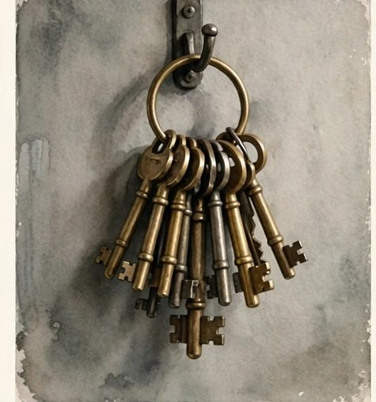
A heavy ring of antique brass keys hanging on a wall hook.
Every person carries a bunch of keys, and not only the kind that opens a front door. Alongside the house key and the key to the letterbox there are older ones, stranger ones, keys to rooms in a life that are visited daily and keys whose doors have not been seen in years. The bunch is heavier than it looks. It has been gathered slowly, one key at a time, across decades, and most of it is carried without ever being examined, the way a pocket carries coins whose denominations nobody has checked since spring.
The keeper of keys keeps no inventory of any one person's bunch, and that is deliberate. The bunch is not a problem to be audited. It is simply the shape a life takes when it has lasted long enough to accumulate doors. Some keys are bright from use and some are dark with rest, and both kinds belong on the ring. A person with very few keys is not simpler than a person with many. They have only been given fewer doors so far, and doors have a way of arriving across a lifetime.
So the bunch is where the house begins, and the keeper asks only that it be lifted now and then and considered, the way one considers the weight of a familiar coat. Not weighed anxiously, not counted like money owed. Just noticed. The keys are not a riddle demanding an answer tonight. They are the ordinary equipment of a person who has lived in more than one room of themselves, and who will, in all likelihood, be handed a few more keys before the ring is complete. The keeper counts them once, and asks nothing further of them.
2Keys You Cannot Account For
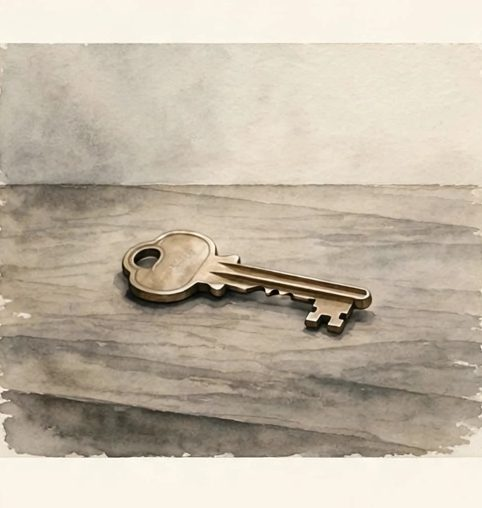
A single unmarked key resting on a wooden table in quiet light.
Sooner or later, turning the bunch over in a patient hour, a person finds a key they cannot account for. It fits nothing in the present house. Nobody remembers cutting it, nobody remembers being given it, and yet there it is on the ring, worn smooth at the edges, plainly old, plainly carried for a long time. The discovery is usually made in a doorway, bunch in hand, with somewhere else to be, and it leaves a small silence behind it that follows the person through the rest of the errand.
The keeper's advice about such keys is unfashionable in its calm. Do not throw the key away in a flare of tidiness, and do not spend the winter hunting for its lock. An unaccounted key is evidence of something modest and true: that a life is longer than its paperwork. People move house in their minds as well as their streets. They keep promises to versions of themselves that later editions never hear about. A key can outlast the memory of its door the way a word outlasts the conversation it was learned in.
Kept on the ring, the unaccounted key does no harm at all. It asks for no rent and makes no claims. Now and then, years later, a door appears that nobody expected, in a corridor nobody visits, and the old key turns in it as smoothly as if the interval had been a week. And if no door ever appears, the key has still done its quiet work. It has reminded its carrier, at intervals, that the inventory of a self is never quite complete, and that this is a condition to live with, not a fault to repair.
3The Key with No Label
Among the labelled keys, the ones with paper tags in fading ink, there is usually one with no label at all. The labelled keys announce themselves. This one was for the garden, that one for the blue suitcase, another for a flat given up long ago. The unlabelled key keeps its counsel. It may be the most important key on the ring or the least. There is no way of knowing from its face, which is entirely ordinary, and that ordinariness is exactly what makes people uneasy when they stop and look at it.
Labels, the keeper observes, are written by the person we were on the day we bothered to write them. They record what seemed worth naming at the time, in the handwriting of a season that has since ended. The unlabelled key may simply have been acquired on a busy day, by a person with no string and no pen, who meant to label it later. Later is a country where many intentions live quietly and are never visited. The absence of a label is not concealment. More often it is just the record of an ordinary afternoon.
There is a temptation to treat the unlabelled key as the deep one, the key to the real room, the answer carried all along. The keeper resists it gently. A missing label proves nothing except that labels go missing. The key may open a cupboard. It may open nothing that still stands. Either way it deserves the same unexcited courtesy as its tagged neighbours: to be carried without mythology, tried without force when a likely door appears, and left in peace when none does. A label, after all, was only ever a convenience, not a verdict.
4Some Keys You Inherited
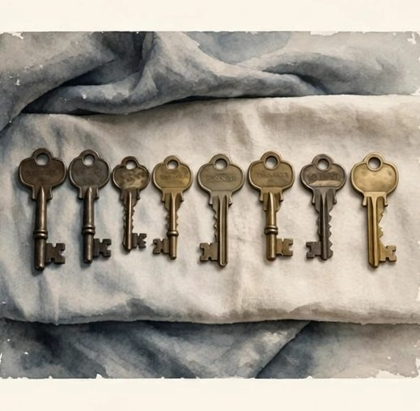
A row of small keys of different ages laid out on cloth.
Not every key on the ring was cut for its present carrier. Some were inherited, handed down the way furniture and phrases are handed down, arriving with the quiet authority of things that were already old when they reached us. A grandmother's way of answering the telephone. A father's silence at the table when money was mentioned. These are keys too. They open rooms in us that we did not build, using habits we did not choose, and they often work so smoothly that we mistake them for our own character.
Inheritance is not theft and it is not fate. A key received from the dead or the distant is simply a key that came with the house. Some inherited keys open genuinely useful doors: the capacity to mend, to wait, to keep a confidence, to make soup from almost nothing in a bare kitchen. Others open rooms we would rather keep shut, and even those are not curses. A key is only a means of entry. It does not oblige anyone to enter, and it certainly does not oblige anyone to live in the room it opens.
The keeper suggests a periodic kindness toward inherited keys: hold them up to the light and ask, without drama, whether each one is still wanted. Some will be kept with gratitude. Some will be kept from habit alone, and recognising the difference is most of the work. A few may be set down at last on the mantel, not in anger, just in acknowledgment that a key can be honoured as an heirloom without being carried forever. The ring gets lighter. The dead, the keeper notes, have never once objected.
5A Key Cut for a Door Long Gone
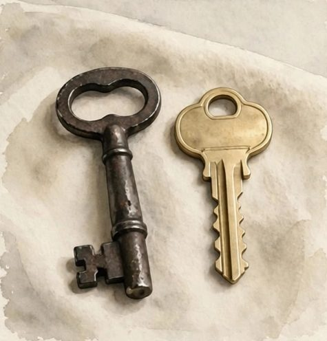
An old dark key lying beside a newer bright one on a cloth.
Every long-carried bunch holds at least one key cut for a door that no longer exists. The house was demolished, the office moved, the friendship ended, the country changed its borders or its name. The door went wherever finished doors go, but the key stayed on the ring, because removing a key feels like an admission, and most of us prefer to postpone admissions. So the key rides along for years, tried nowhere, fitting nothing, its teeth still sharp, its purpose entirely in the past tense. The keeper files it under history, where it keeps good company.
There is no disgrace in this, and the keeper is firm on the point. A key for a vanished door is not evidence of failure to move on. It is evidence that the door mattered once, which is a different thing entirely. People keep train tickets from journeys that changed them and shells from beaches whose names they have forgotten. The key is the same order of object. Its weight is mostly memory, and memory, unlike metal, does not rust, though it can grow surprisingly heavy in a coat worn every day.
What to do with such a key is a small decision that deserves to stay small. Keep it, if keeping it is a form of respect. Set it in a drawer, if the ring has grown crowded. Give it a label at last, naming the door it once opened, and let the label do the remembering so the hand does not have to. The only poor option is pretending the key still has work to do. A door long gone cannot be unlocked, and standing before its empty site turning a key helps no one, least of all the person holding it.
6The Heaviest Key Is the Smallest
Ask anyone which key on their ring weighs most and they will rarely point to the largest. The heaviest key is usually a small one, sometimes the smallest on the bunch, a modest piece of brass that opens a modest door: the room where a grief is kept, the drawer where an old shame was folded away, the door behind which a person stores the version of events they have never said aloud. Small keys open interior doors, and interior doors are the ones we pass most often, every day, on the way to everywhere else.
Its weight is not in the metal. A key weighs what its door weighs, and some doors are load-bearing in a life. The small key is heavy because it is carried everywhere, into every room, every year, through every change of coat and circumstance. Other keys are used and set down. This one is never set down, because the door it opens is never finally dealt with. It is opened, glanced into, closed again. The glancing takes a second. The carrying takes a lifetime, and the arm learns the weight so well it stops reporting it.
The keeper does not advise throwing the small key into the river. Doors that are never opened again still deserve keys; that is what makes them doors rather than walls. The advice is only to know which key is the heavy one, and to let that knowledge adjust the carrying. Rest the bunch on the table sometimes. Let someone else hold the ring while you find your gloves. A weight that is acknowledged is carried differently from a weight that is denied, and the difference, over thirty years, is the difference between a stoop and a stride.
7Keys That Open Nothing Yet
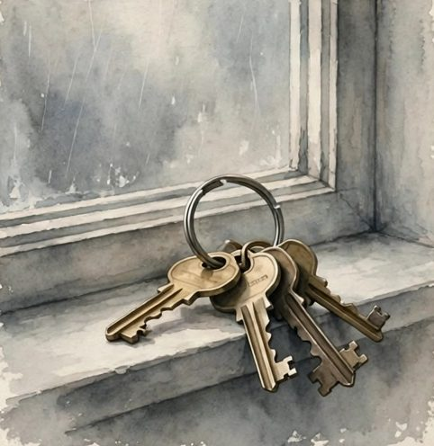
A key ring resting by a window in soft grey light.
Some keys on the ring open nothing yet. They are not broken and they are not fakes. They were cut, or given, or found, and the doors they belong to have simply not been reached. A person carries such keys the way they carry capacities they have never needed: the language half-learned in school, the courage reserved for an emergency that keeps not happening, the tenderness intended for children not yet born or friends not yet met. The keys wait on the ring without complaint, bright and unused, for a corridor that may be years away.
It is tempting to be embarrassed by unused keys, as if a life were an examination in which every item of equipment must be demonstrated. The keeper has seen the opposite embarrassment too: people inventing doors, forcing bright keys into any lock that offers, just to justify carrying them. Forcing a key is the one true way to break both key and lock. An unused key is not a failed key. It is a key whose season has not come, and seasons, in the keeper's long experience, are not consulted about their timing and cannot be hurried by worry.
There is a quiet pleasure available here, for those who can take it: the pleasure of being unfinished in an interesting direction. A bunch with a few unused keys on it is the equipment of someone whose house is still being built around them. The doors may arrive singly, late, without ceremony: a new town, a new trade, a person who turns out to be a corridor. When one arrives, the bright key will be there, untarnished by anxiety, ready to turn. Until then it rides the ring as a small, reasonable hope, and asks for nothing but to be carried lightly.
8The Ring Itself Is Old
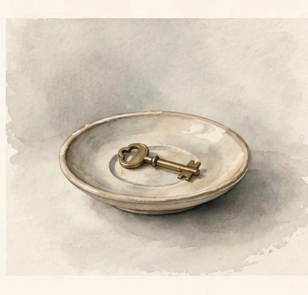
A tiny brass key resting on a saucer beside the ring.
Attention usually goes to the keys, but the keeper, given a quiet hour, studies the ring itself. The ring is old. It has outlasted several bunches, several houses, several entire editions of its owner. Rings are the part of the equipment nobody chooses carefully: this one came with something, that one was borrowed from a drawer of spares, and each has simply continued, holding together things that were never meant to be a set. The ring is the unsung condition of the whole arrangement. Without it, the keys are a handful. With it, they are a bunch, a household.
There is something in this worth sitting with. What holds a person's keys together is rarely a grand philosophy. It is something more like this ring: plain, circular, acquired by accident, strengthened by use. A routine. A street walked daily. A person telephoned on Sundays. The ring does its work by not being noticed, and its strength is of the unglamorous kind that consists of never having failed yet. People praise their keys, their doors, their rooms. The keeper praises rings, quietly, the way one praises foundations and other honest infrastructure.
Rings do wear, of course. They thin at the point of most friction, and a wise carrier checks the ring now and then, not the keys. If the thing that holds your life together has been taken for granted for a decade, it deserves an inspection and perhaps a renewal: a newer ring, deliberately chosen this time. The keys will transfer without noticing. That is the kindness of rings. They can be replaced without ceremony, and the bunch carries on, held as before, by something small and round and entirely equal to its task.
9One Key You Use Every Day Without Noticing
On every bunch there is a key used every day without noticing, and it is the hardest one to describe, precisely because it has never been looked at. It opens the door the person passes through on waking: the settled sense of being themselves, in their own life, at their own address in the world. Other keys are for occasions. This one is for mornings. It turns so easily, and has turned so reliably for so long, that its owner has forgotten it is a key at all, and believes the door simply opens for them.
The keeper finds this the most touching item in the whole inventory. A great deal of a life is held together by mechanisms that work too well to be seen. The unnoticed key is one of them. It is only in its absence that it becomes visible: on the strange mornings after bad news, or in a foreign city, or in the first weeks of a changed life, when the familiar door sticks for a moment and a person stands in the corridor of themselves, bunch in hand, suddenly aware that entry was never automatic. It was always a key, turning.
No action is required, and that is the point of this room. Some things in the house are not to be improved, labelled, or understood, but simply, occasionally, thanked. The unnoticed key asks for one moment of recognition in a decade: a hand paused on the ring in the morning, a brief acknowledgment that the ordinary door opened again today, as it has opened on ten thousand ordinary days, and that this ordinariness is not a small thing. Then the day proceeds. The key returns to its invisibility, well content, and the house to its routines.
10A Key Lent, a Key Borrowed
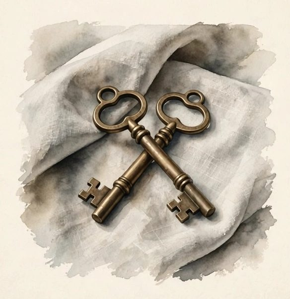
Two keys lying crossed on a piece of linen.
Not all the keys in a life are carried by their owners. Some are lent, and some are borrowed, and the traffic in borrowed keys is one of the oldest arrangements between people. You hold a friend's spare key against their holidays and their lockouts. A neighbour holds yours. Somewhere in a kitchen drawer across town, a key to your front door sleeps in someone else's custody, and the knowledge steadies you both in ways that have nothing to do with locks. To lend a key is to say: my house trusts your hands. Few sentences in the language say more, more quietly.
Borrowed keys work the other way too, inward. People carry, for years, keys lent to them by the important figures of their lives: a teacher's way of opening a difficult subject, a friend's way of entering a room full of strangers without fear. These borrowed keys open real doors. There is no shame in the borrowing. Half of any well-furnished self is on long loan from the people who loved or taught its owner, and the loans are rarely called in. What was lent in generosity usually stays lent, and becomes, over decades, indistinguishable from property.
The keeper keeps a small ledger of lendings, not from suspicion but from tenderness. A lent key is a thread between houses, and threads are worth knowing about. Once in a long while a key should be returned: when the friendship has changed its nature, when the keeping of it has become a weight rather than a trust. Returning a key, done plainly and kindly, is not a rupture. It is an acknowledgment that arrangements between people, like arrangements between a person and their own past, are allowed to be revised. The ring accepts the revision. It has accepted so many.
11The Key You Keep for Someone Else
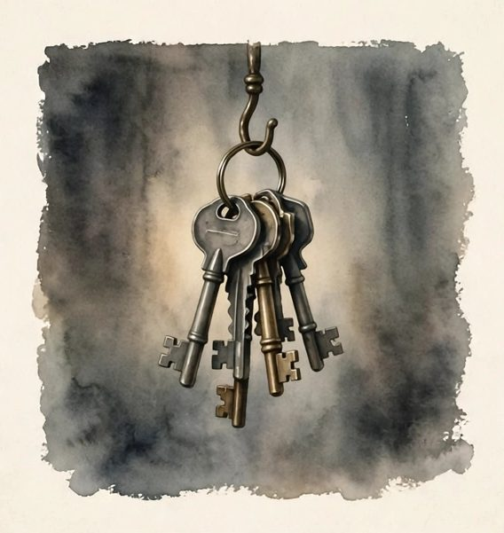
A bunch of keys hanging in soft evening light by the door.
There is a particular key many people carry that is not theirs at all. They keep it for someone else: for the sister whose moods have a room they may need to enter quickly, for the old friend who once said, in a bad year, keep this, in case. Sometimes the key is literal, cut for a literal door. More often it is a standing readiness, a kept confidence, a promise to be the person who can be telephoned at three in the morning and who will know, without being told, which door the call is about.
Keeping a key for someone else is a quiet honour and a real weight, and the two facts do not cancel each other. The keeper has watched people carry such keys for decades, long after the emergency that prompted them has faded, and there is something beautiful in the refusal to set them down. The key says the readiness has not expired. But the keeper has also seen the carriers forget to ask, across all those years, whether the door still exists, or whether the someone else still wants it kept. Readiness, unexamined, can become a monument to an emergency that ended long ago.
The maintenance, as usual, is a small conversation rather than a grand one. A key kept for another person can be mentioned, now and then, without ceremony: I still have it. Is it still yours to want kept. Sometimes the answer renews the trust and lightens it at once. Sometimes the other person laughs and says the door was bricked up years ago, keep the key as a keepsake. Either way, both parties walk off lighter. A trust that is spoken aloud ages better than a trust that is only assumed, however faithfully, in silence.
12Count Them Gently
Once in a while, perhaps once in a decade, it is worth doing what the keeper does on the last evening of the year: taking the whole bunch off its hook, laying the keys out on the table, and counting them gently. Not auditing them. Not interrogating them. Counting them, the way one counts the chairs before guests arrive, as a simple act of acquaintance with what one has. Most people have never once seen all their keys at the same time. They know them by touch, in the dark, one at a time, which is another way of not knowing them at all.
The counting surprises almost everyone. There are more keys than expected, and fewer. More, because the years have been generous with doors. Fewer, because some keys turn out, laid flat in daylight, to be duplicates, or broken, or so plainly retired that their retirement can finally be admitted. The table makes no judgments. It simply allows the whole bunch to be present at once, and a self that can be present all at once, even for an evening, is easier to live in than a self met only in fragments, in doorways, in a hurry.
Then the keys go back on the ring, nearly all of them, and the bunch returns to its hook by the door, and nothing about the house has changed except one thing: the carrier has seen what they carry. The keeper recommends the exercise the way one recommends airing a room. Not because the room was uninhabitable, but because airing is cheap, and pleasant, and occasionally reveals that a window has been painted shut for years without anyone deciding it should be. Count them gently. The gentleness is not decoration. It is the entire method.
13Doors That Open, Doors That Don't
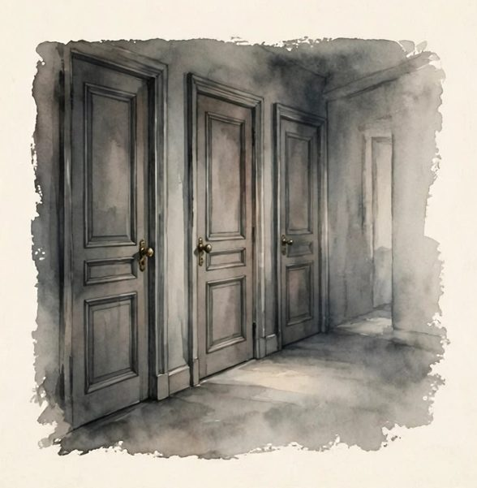
A row of doors standing along a dim corridor.
The house of a self has more doors than any map of it admits, and the doors are not alike in their manners. Some open at a touch, before the key is even turned, as if they had been waiting with their hands on the latch. Some open stiffly, with a protest of hinges, and need to be leaned on with a shoulder. Some have not opened in so long that the paint has sealed them to their frames. And a few, the keeper notes without alarm, may not be doors at all, but the idea of doors, kept for symmetry by an architect with a sense of humour.
It helps, enormously, to know that doors differ, because a person who expects every door to behave like the front door will spend a life misjudging the house. The stiff door is not a hostile door. The sealed door is not a verdict. The door that opens too easily is not necessarily the important one; draughts favour the loose doors, and importance has its own distribution. Each door in the corridor has its own weather, its own season for opening, its own opinion about being hurried, which is always unfavourable and always, in the keeper's experience, correct.
The corridor itself deserves a word. A life is not only rooms; it is also the walking between them, the dim passages where nothing is stored and nothing happens except transit. People hurry through their corridors as if the house were only destinations. But the corridor is where the doors can be seen together, in a row, in perspective, and a person who never walks it slowly will never know the actual shape of their own house. Walk slowly. Notice which doors you pass without glancing, and which you glance at without stopping. There is information in both, of the quiet kind.
14The Door That Opened Once
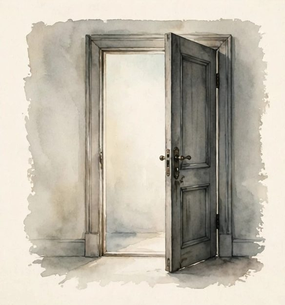
A door standing open, with pale light beyond it.
In most houses there is a door that opened exactly once. It opened on an ordinary day, without announcement, stood open for an afternoon or a season, and then closed, and has never opened since despite keys, despite knocking, despite the memory of exactly how it looked when it stood wide. A person met someone through it. Or a gift arrived through it, or a grief. Or a whole possible life was visible through it, furnished and lit, for just long enough to be believed in, and then the door swung gently to, and the corridor was only a corridor again.
The once-opened door is the source of a particular, durable ache, because it is proof and loss in the same object. It proves the room exists. It proves the house is larger than the daily floor plan. And it refuses, absolutely, to be proof of anything else: not that the room can be re-entered, not that it should be, not that its closing was anyone's fault. Doors have their own traffic. Some are thoroughfares and some are visitations, and confusing the second kind for the first is how people spend decades in a corridor, rattling a handle that was never promised to them twice.
The keeper's counsel is conservative. Honour the door. Remember what was seen through it, accurately, without enlarging it in the remembering. Let it stand in the corridor as evidence that the house contains more than its routine, which is a useful thing to know on grey days. And then live in the rooms that open. A house is not measured by its most beautiful doorway. It is measured by the warmth of the rooms its people actually inhabit, and those rooms, unglamorous and daily, have doors that open every single morning.
15Locked Is Not the Same as Lost
A locked door frightens people out of proportion to its meaning, and the keeper spends a good part of the working year correcting the misunderstanding. Locked is a condition. Lost is a conclusion. A locked door says only that entry is not presently available by the usual means. It says nothing about the room beyond it: not that the room is gone, not that it is forbidden forever, not that it contains anything terrible or anything wonderful. It is the most over-interpreted object in the house, and the keeper wishes, mildly, that doors could sue their interpreters for the distress caused.
Much of the trouble comes from a confusion between privacy and catastrophe. Some rooms in a self are locked the way a diary is locked: not because the contents are shameful, but because they are unfinished, or tender, or simply not for general circulation, including, at times, circulation to their owner at 2 a.m. in a low mood. A locked door at midnight, tested by a tired hand, feels like an accusation. The same door at noon is carpentry. The door has not changed. The hour has, and the hand, and the keeper suggests trusting the noon assessment over the midnight one, as a standing policy.
Time, which is the house's oldest servant, does quiet work on locks. Some open years later for keys that were on the ring all along, tried in a different season by a different edition of the same person. Some are opened from the other side. Some stay locked for the duration, and the house remains, demonstrably, a perfectly good house. A locked door is one fact among many, and it can be lived beside, hung with a picture, passed on the way to the kitchen, without being turned into the house's defining feature.
The Key Desk
One desk receives all correspondence for this house — questions, corrections, keys returned, keys reported found, word of any door that opened or any room you finally sat in. It is read in the order it arrives.
16The Door Behind the Bookshelf Is Just a Door
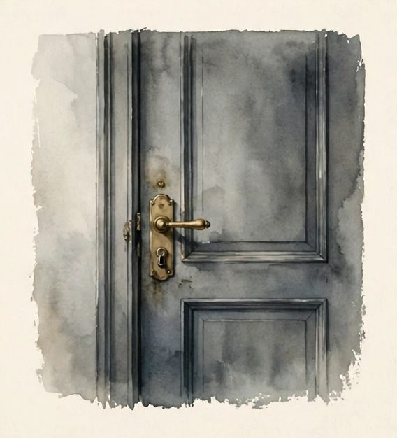
A locked door with a worn brass handle, standing in a quiet corridor.
In stories, the door behind the bookshelf is always the significant one. It conceals the passage, the treasure, the truth about the family, and it swings open at the touch of the right volume. The keeper, who has inspected a great many houses, wishes to file a correction on behalf of reality. The door behind the bookshelf is usually just a door. It leads to a cupboard, or a fuse box, or a room so ordinary that its concealment was an accident of furniture placement, decades ago, by people thinking about the sofa, not about symbolism.
The disappointment this causes is instructive, and worth examining instead of merely feeling. We want the hidden door to be the meaningful one because that would make meaning a matter of location: findable, openable, finished. But meaning in a house is rarely stored in the concealed places. It is distributed through the visible ones, thin as daylight, in the rooms used daily. The ordinary cupboard behind the bookcase, with its paint cans and spare light bulbs, is not a failed symbol. It is a cupboard, succeeding completely at being one, and there is a restfulness in letting objects succeed at what they are.
None of this forbids checking behind the bookshelf. The keeper checks. Curiosity is a respectable instrument and the house rewards it more often than cynics claim. Only check without a contract in your heart. If the door opens on a broom and a stack of old telephone directories, accept the broom at face value. The house is not teasing you. It is simply a house, most of whose doors lead to exactly what a sensible person would store behind them, and the few that do not are not made more findable by demanding that all of them be mysteries.
17Some Doors Open Only from Inside
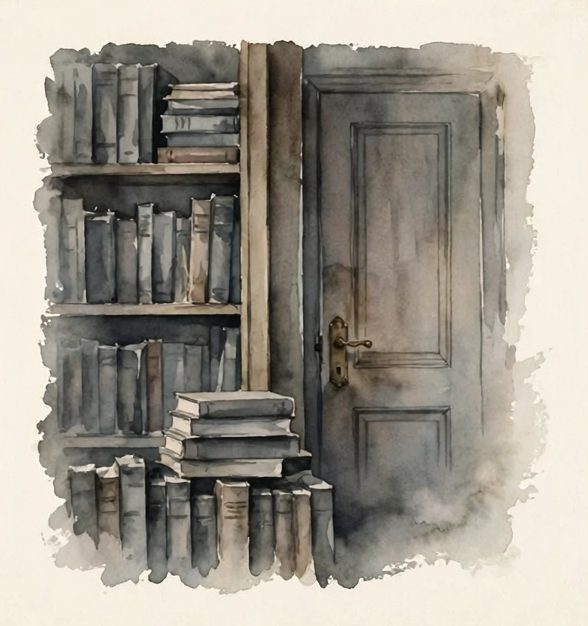
A door half hidden behind a tall bookcase at the corridor's end.
Some doors in the house open only from inside, and no key carried on any ring will turn them from the corridor. This is not a flaw in the keys. It is a design of the house, and an old one. A grief that will open when it is ready and not when summoned. A forgiveness that cannot be issued by decree, even a sincere one, but arrives one morning already open, like weather that changed in the night. A understanding of one's own past that stays shut through years of knocking and then, in an unremarkable hour, is simply ajar.
The corridor side of such a door is a difficult place to stand, because standing there feels like failure: the key bunch useless in the hand, all that equipment, all that willingness, and still no entry. The keeper tries to retire this feeling wherever it is found. Willingness was never the issue. Some rooms are not entered by effort at all, but by ripening, the way fruit is not opened but becomes ready. The person in the corridor is not locked out of their own house in any sinister sense. They are early. The room keeps its own calendar, and its calendar is not published.
Waiting well is the whole skill here, and it is mostly a skill of not doing damage. Do not force the door; forced doors and forced openings in a self have a way of splintering. Do not camp in the corridor either, life arranged around a single closed door, meals taken sitting against it. Live in the rest of the house. The inside-opening doors have a habit of announcing themselves, eventually, by a change in the light under them, and a person living a full life in the other rooms is far better placed to notice that light than a person who never left the corridor.
18The Door You Knock on Politely
There is a door in every house that responds to one approach only, and the approach is knocking politely. Force alarms it. Demands set its bolts deeper. But a knock, at a civil hour, in a civil spirit, with a willingness to accept no for an answer, sometimes gets the door opened a crack, in time, by whoever keeps the room beyond. The keeper is aware of how unscientific this sounds and files it anyway. Some parts of a person, and some rooms in a life, are governed by etiquette rather than engineering, and etiquette, unlike engineering, cannot be rushed without being destroyed.
What is being knocked on, exactly, varies by house. It may be a memory that will not be summoned but will visit. It may be the part of oneself that makes things, which famously refuses direct orders and drifts in sideways when the conscious management is looking elsewhere. It may be another person entirely, whose interior door is theirs to open and whose no is a complete sentence. In every case the knock says the same thing: I know this door is yours. I am not here to take the room. I am here because the corridor is better with the possibility of your company in it.
And sometimes the door does not open, and the knocking must stop, and that too is part of the etiquette. A knock repeated forever becomes a siege with good manners. The keeper's rule is simple enough to be kept on an index card: knock as you would wish to be knocked for, at hours you would wish to be disturbed at, and then believe the answer, including the answer that is silence. Houses stay habitable because their doors are respected. The corridor, walked away from gracefully, is not a defeat. It is how the house knows its keeper can be trusted with the doors that do open.
19A Door Painted on the Wall
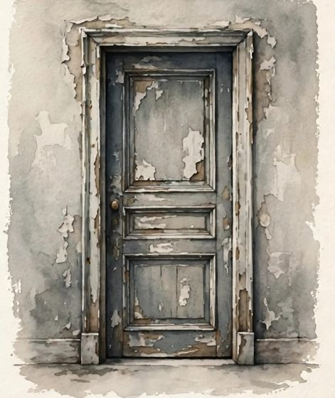
A painted door on a wall, its paint slightly peeling at the edges.
Every old house has at least one door that is only painted on the wall. It looks convincing from across the room: panels, a frame, sometimes even a knob rendered in shadow. Generations of residents have walked toward it in a hurry and remembered, or not remembered, a half-step too late. Painted doors are the house's oldest joke, and like most old jokes they were not malicious when they were made. Someone, long ago, wanted symmetry on that wall, or dreamed of a room that was never built, and painted the intention where the architecture failed to provide.
A person carries painted doors too, and these are worth identifying, gently, without self-contempt. The career that was a plan for a season and a picture ever after. The fluent language, the finished novel, the reconciled family: each may be a real door in one house and a painted one in another, and the difference is not always visible from the corridor. The test is embarrassingly simple. A real door, tried over years, sometimes opens a little. A painted door admits, under honest inspection, that it has no hinge and no room behind it, only wall, all the way through.
Finding a painted door in oneself is not the tragedy it first appears. Wall, honestly known to be wall, can be used: pictures hang on it beautifully, and furniture stands against it without apology. What wastes a life is not the painted door but the decades spent queuing before it, key in hand, interpreting its stillness as personal failure. The keeper's practice is to label such doors, kindly, in the inventory: painted, by an earlier resident, in a hopeful year. Then walk on. The corridor is full of doors that are doors.
20The Door That Was Never Locked
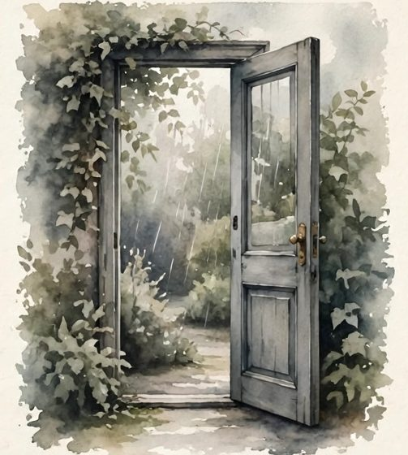
A garden door standing ajar in grey daylight.
The strangest discovery in the keeper's whole catalogue is the door that was never locked. People stand before such doors for years, sometimes for the better part of a life, keys ready, courage gathered and re-gathered, rehearsing the difficult entry, the confrontation, the transformation that will surely be required of them on the other side. Then one day, often by accident, a hand leans on the door while reaching for something else, and it swings open on oiled hinges, into a room that has been available the entire time, wondering mildly what took everyone so long.
Such doors guard the changes that turn out to need no permission. The apology that could have been made any Tuesday of the last ten years. The work that could have begun with the skills already in the drawer. The plain statement of what one actually wants, sayable in one sentence, in rooms where it would have been received with relief. The lock, all those years, was on the corridor side, and it was made entirely of anticipation. This is not an accusation; anticipation is a heavy material, and many good people have been delayed by it for decades without any foolishness on their part.
The keeper keeps a small ceremony for such doors. When one is found to have been open all along, the discovery is not to be followed by self-punishment for the wasted years, which would only build a new lock out of the old one's remains. The years were not wasted; they were spent becoming the person who could finally lean on the door casually. Enter the room. Put the kettle on. The room does not care when you arrived, and neither, in the keeper's experience, does anyone else who matters. Open doors are poor historians. They are interested in traffic, not in apologies.
21Corridors Between
Between the rooms of a life there are corridors, and the corridors are not nothing. They are where a person spends more time than any inventory admits: between the self of the morning and the self of the evening, between the role at the office and the person at the kitchen table, between one decade's certainties and the next decade's questions. Corridors have no furniture and no purpose except passage, and for exactly that reason they are honest places. Nothing is performed in a corridor. Nobody arranges a corridor for guests. It is the house at its least defended, seen in transit.
People tend to hurry their corridors, treating them as delays between the rooms that matter. The keeper, who has walked a great many, counsels a slower pace, because corridors are where the house can be surveyed whole. From a corridor you can hear several rooms at once. You can notice which door you always pass quickly and which you slow before without deciding to. You can catch, in transit, the small negotiations the self conducts with itself all day: the straightening before one door, the softening before another, the breath taken before a third. None of this is visible from inside any single room.
There is also this: corridors connect. A person who feels like a set of separate, inconsistent selves, a different person in every room, is usually a person who has not yet walked their own corridors slowly enough to feel the floorboards continuous underfoot. The rooms differ; the corridor is one corridor. The house is one house. Identity, if the word must be used in the keeper's hearing, may have less to do with the furniture of any room than with the fact that the same feet, in the same worn slippers, have walked between all of them for years, and know the way in the dark.
22The Door You Walk Past Daily
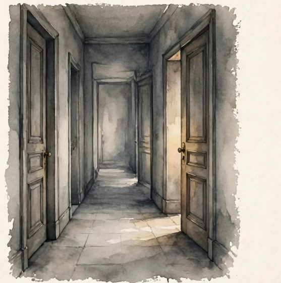
A corridor with doors on both sides, light showing under one.
In every corridor there is a door walked past daily, and it is not the locked one or the painted one. It is an ordinary door, unlocked, unremarkable, passed twice a day for years on the way to somewhere else, and never once opened. Not from fear. Not from prohibition. Simply because the route of the life has never required it, and the eye, which is a conservative organ, has long since filed the door under scenery. It takes a visitor, sometimes, to stop in the corridor and say: what is in there. And the owner of the house discovers they cannot answer.
Behind such doors are the unlived departments: the subject never pursued past the first curiosity, the instrument unplayed since school, the whole talent for languages or engines or gardens that was noted once, approvingly, by a teacher, and then respectfully ignored for forty years while the life took its actual course. The keeper wants it understood that an unopened door is not an indictment of the course taken. A life cannot go through every door; that is what makes it a life rather than a warehouse inventory. The doors passed daily are the price of the doors chosen, and the price is normal.
Still, the keeper recommends knowing which door it is. There is a difference between a door passed by choice, its contents roughly known and peacefully declined, and a door passed by pure inattention for half a century. The first is a decision, and decisions are the furniture of a self. The second is a small mystery of the ordinary kind, and it costs one minute to resolve into the first kind: stop, one ordinary Tuesday, hand on the handle, and at least learn what room you have been declining. You may still decline it. But now it is a door you know, in a house you know, and that changes the corridor entirely.
23Not Every Door Is Yours to Open
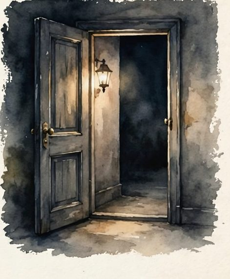
A door left ajar at night, lamplight falling through the gap.
It is a relief, once absorbed, that not every door in the world is yours to open. Other people have houses too, with corridors and locked rooms of their own, and their doors are not your doors, even when you love the people, even when you are worried about them, even when you are quite sure you know what is behind the door and what should be done about it. A key that fits is not always a permission. Some of us carry, from helpful years, whole bunches of other people's keys, and the bunch grows heavy with responsibilities that were never actually assigned, only assumed.
The same mercy applies inside one's own house, in the other direction. There are doors in a person that belong to a season, and the season is not this one. There are doors that belong, frankly, to other people's business even though they stand in your corridor: the parent's old sorrow, the friend's undisclosed trouble, stored in your hallway like parcels delivered to the wrong address. You may keep them safe. You are not required to open them. Opening parcels that are not addressed to you, even parcels stored in your own house, has never yet made anyone wiser, only busier and sadder.
The keeper frames this as good news because it is. A bunch of keys that includes only your own doors is a lighter bunch, and the lightness is not selfishness but accuracy. Leave other people's doors to their keepers. Knock, when knocking is kind. Carry parcels unopened to their owners when asked. The rest of the time, attend to your own corridor, which is long enough, and contains, as established, more doors than any one lifetime will open anyway. That is not a limitation. That is the size of the estate, and it is sufficient.
24Leave One Door Ajar
Of all the keeper's small recommendations, this is the smallest and the one most often repeated: leave one door ajar. Not wide open, not inviting inspection, just ajar, an inch of light, so that the house stays in conversation with itself. A house with every door shut tight becomes a set of sealed compartments, each keeping its own weather, none able to warn the others of smoke or cheer them with music. A house with one door ajar has a circulation. Something moves through it. The keeper has found, across many inventories, that the health of a house can be guessed from whether anything in it is deliberately left unclosed.
Which door is a personal matter, but the candidates nominate themselves. The door to the room of unfinished questions. The door behind which a changed mind might one day emerge. The door to the part of oneself not currently in office, the summer self in winter, the serious self at the festival, kept within earshot rather than exiled. An ajar door is a standing admission that the present arrangement of the house is not the final arrangement, and that the management knows it, and is not frightened. Few admissions cost less and buy more peace.
There will be seasons, of course, when every door must be shut against the weather, and the keeper does not sentimentalise them. Shut them, in such seasons, and bolt them, and sleep. The recommendation resumes when the weather turns. Ajar is not a permanent policy but a returning one, like opening windows in spring. And on the ordinary days, which are most days, the inch of light on the corridor floor does its quiet work: it reminds everyone passing that the house is lived in by someone who expects, still, to be surprised by their own address.
25The Case Unsolved
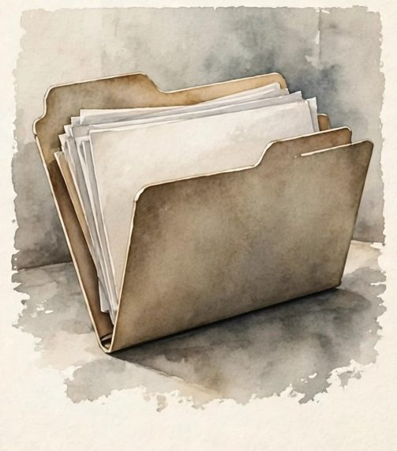
A folder of blank papers lying on a desk under a lamp.
Every house of a certain age accumulates a case that does not close. The file sits in the keeper's cabinet, neither active nor archived, and it concerns the oldest question the house contains: the question of who, exactly, lives here. Evidence has been gathered for decades. Witnesses have been heard. The file has grown thick, then thicker, then thick enough to need a second folder, and the fundamental matter remains, in the language of the office, unresolved. New keepers sometimes arrive expecting to close it by diligence. Old keepers pour them tea and show them where the file is kept, and the tea, and the showing, are the real orientation.
It is important to the keeper that the unsolved case not be mistaken for a scandal. Nothing in the file suggests wrongdoing. The case is unsolved the way the weather of a coastline is unsolved: not because the observations are lacking, but because the subject declines to hold still under them. A person is not a static fact awaiting a sufficiently clever investigator. A person is a process with a filing problem, and the file of a process is necessarily always behind, always partial, always fair game for revision at the next birthday, the next bereavement, the next unexpected Tuesday.
So the case rests in its cabinet, and the house goes about its business around it, and the keeper has come to regard this arrangement as the normal one. The file is consulted. The file is added to. The file is, on quiet evenings, a source of something close to companionship: proof that the resident of the house is interesting enough, and changeable enough, to resist a final summary. A closed file would mean a smaller house than this one. The keeper keeps it open, and keeps the kettle on, and considers the arrangement not a failure of the office but the office itself.
26The Detective Is Also the Scene
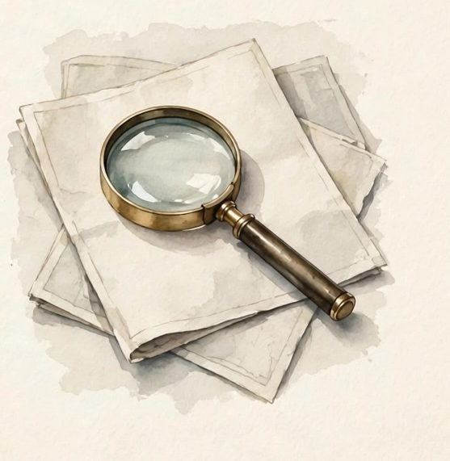
A magnifying glass resting on a blank map of the house.
The investigation of a self labours under one difficulty no ordinary inquiry faces: the detective is also the scene. The person asking who lives in this house is the person who lives in it, walking the corridor with a lamp, leaving fresh footprints across the very floors being examined. Every observation alters the observed, if only by a little. A mood, once noticed, becomes a mood with an audience. A habit, once caught in the act, performs or hides. The evidence in this case has the unique property of knowing it is evidence, and behaving accordingly, which would drive a stricter office to despair.
The keeper, fortunately, is not a strict office. The entanglement of detective and scene is not treated here as contamination but as the ordinary condition of the work, like weather in a harbour town. Of course the resident's footprints are everywhere in the resident's house. Of course the inquiry is partly a tour the house gives itself, on its own behalf, in its own words. This does not make the findings worthless. It makes them findings of a particular kind: testimony from inside, which is biased the way all inside testimony is biased, toward the familiar, and valuable the way all inside testimony is valuable, because only the inside knows where the stairs are.
What the keeper asks of the detective is therefore a double courtesy. Curiosity, yes; the lamp, the notebook, the patient rounds. But also the courtesy due a scene that is a home: wipe your feet, do not rearrange the furniture to suit the theory, and remember that the resident, who is also yourself, must go on living among the evidence after the investigation adjourns for the night. Detectives go home from ordinary cases. This one is home. The inquiry should leave the house more habitable than it found it, or it was not an inquiry. It was a ransacking with a notebook.
27Evidence, Handled Carefully
Evidence in the case of a self arrives in the humblest forms: a kept ticket stub, a recurring dream, the song that reliably undoes its listener, the subject that reliably starts an argument at the table. None of it arrives labelled. The keeper's first rule of evidence is therefore plain to the point of dullness: handle it carefully. An object becomes evidence only when someone files it as such, and the filing is an act of interpretation, which means the humble ticket stub can be made to testify to almost anything by a determined examiner with a theory to feed. Evidence is patient. It will agree to be quoted in any argument. That is exactly why it must be handled with gloves.
Careful handling begins with describing before explaining. What, precisely, is the fact. The song exists, the reaction exists, the year and the place can be stated. The meaning of the fact is a second document, to be written later, in pencil, in the knowledge that other keepers of the same file have written other meanings in other pencils and were not fools. Most of the sorrow in self-investigation comes from skipping the first document entirely and going straight to verdicts built on unexamined descriptions. The keeper has seen whole self-portraits constructed from one misremembered afternoon and an examiner in a hurry.
There is also the matter of chain of custody. Memories are transferred between tellings, and each telling edits. The anecdote polished for twenty years is no longer the event; it is the event's ambassador, well dressed and not entirely reliable. The keeper does not discard ambassadors, but cross-checks them when it matters, against dates, against letters, against the testimony of others who were in the room. And when the cross-check fails and the evidence stays contradictory, the file records the contradiction, plainly, without forcing a winner. Contradiction, honestly filed, is information. Forced agreement is fiction with paperwork.
28What the Witnesses Say
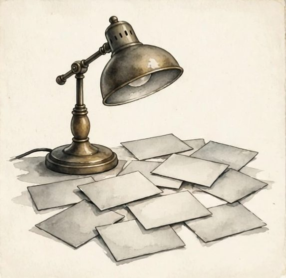
A desk lamp shining over scattered blank index cards.
Sooner or later the investigation takes testimony, because a self is partly stored in other people's keeping. The witnesses are everyone who has known the resident across the years: the mother, who knew the earliest edition; the school friend, who knew the reckless one; the colleague, who knows the competent one and has never met the others. Each witness, called to the keeper's desk, describes the person they know, and each description is sincere, detailed, and partly unrecognisable to the person it describes, who sits listening with the strange sensation of hearing about a relative they have never met but somehow resemble.
The keeper receives all of it with respect and files none of it as the whole truth. A witness testifies, honestly, to an intersection: the place where the resident's life crossed theirs, in the light of their own lamps, in the years when they shared a corridor. The mother is not wrong about the child she knew; that child existed. The colleague is not wrong about the professional at the desk; that professional exists. The file grows richer for every witness heard, and the mistake, the only real mistake available here, is to promote one testimony into the official biography and demote the rest to error.
It is worth asking witnesses at all because the view from outside is genuinely unavailable from inside. The resident cannot see their own face arriving in a room, cannot hear their own tone as a room hears it, cannot know which of their habits is the famous one. Other people's testimony is the only mirror with a memory. Handled carefully, it corrects the file's wildest errors, including the resident's own. Handled carelessly, as gossip or as flattery, it corrupts the file just as efficiently. The keeper admits it the way evidence is admitted: gratefully, labelled, and never alone on the page.
29The Witnesses Disagree
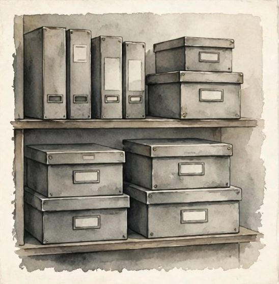
A shelf of archival boxes with blank labels, stacked in rows.
The witnesses disagree, and the file would be poorer if they did not. Put the mother and the school friend and the colleague in one room with one question, and three different people will be described, each with evidence, each with anecdotes that cannot all be true of a single simple resident. The beginner investigator treats this as a problem: someone must be mistaken, someone must be lying, and the case cannot proceed until the false witness is found. The keeper treats it as the most reliable finding in the whole investigation. The disagreement is the data. A person large enough to be described three ways, sincerely, is exactly as large as the descriptions suggest.
Part of the disagreement is arithmetic. Each witness saw a fraction: one decade of six, one room of the house, one season of the weather. A report of the coast in August and a report of the same coast in February will contradict each other on every page, and both will be accurate, and neither will be the coast. The resident who demands that the witnesses agree is demanding that the coast have one season. It is a understandable wish, especially on the February days, when August testimony sounds like slander. But the file keeps both reports, dated, and the dating does most of the reconciling by itself.
The keeper also notes, in the margin, that witnesses carry their own weather into the testimony. A witness in a generous year describes a generous resident. The same witness, diminished by their own troubles, describes a smaller one, with the same anecdotes doing different work. This is not a reason to dismiss testimony. It is a reason to record the conditions under which it was given, as a harbour records the tide. In the end the file holds its contradictions in a state the keeper calls, without embarrassment, agreement to differ: the truest summary this office has ever produced of anyone.
30Cold Cases in a Warm House
In every long-running investigation there are cold cases: the questions that were urgent once and have since gone quiet, not because they were answered, but because the life moved and took its urgencies elsewhere. Why that friendship ended without a word. Why that city was left in such a hurry. Why one particular year is a corridor with no doors anyone will open. The files exist. The questions exist. But the house is warm, and dinner is at seven, and the cold cases sit in their drawer acquiring the special stillness of things that no longer hurt and have not yet explained themselves.
The keeper is fond of cold cases and resists, on principle, the language of failure around them. A question that goes quiet has not been defeated; it has been outlived, which is a different fate, and sometimes a kinder one. Some questions were only ever the shape that a younger person's pain took, and when the pain ended the question lost its fuel and folded itself away. To reopen such a file out of tidiness, demanding that every drawer of the past be resolved before the present can be fully occupied, is a tax on the living that the keeper refuses to levy.
And yet the drawer is not sealed. Cold cases have a way of warming themselves, unassisted, years later, when a chance resemblance or an old song or a stranger's remark supplies, casually, the one fact that was missing, and the whole file rearranges itself in an afternoon. The keeper has watched this happen too often to schedule it and too often to doubt it. Nothing is done to provoke these thawings. The house simply stays warm, the drawer stays findable, and the resident stays the kind of person to whom answers can still arrive. Some files close. Some files wait. The office has learned to honour both tempos.
The Key Desk
One desk receives all correspondence for this house — questions, corrections, keys returned, keys reported found, word of any door that opened or any room you finally sat in. It is read in the order it arrives.
31A File That Grows Without Closing
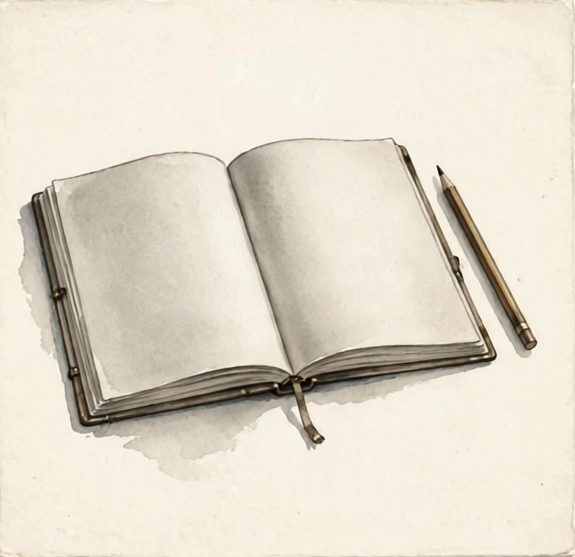
A notebook open to blank pages, a pencil resting beside it.
The file of a self has one property that distinguishes it from every other file in the cabinet: it grows without closing. Each year adds its bundle of evidence, its new witnesses, its revised testimony, and no year yet has subtracted the need for the next one. The young investigator experiences this as a backlog, a sign of inefficiency, and works late trying to reduce the pile to a summary that will stay summarised. The keeper, who has supervised the file for a very long time, experiences it as the signature of a living subject. Dead subjects have closed files. The growing file is how the office knows the resident is still alive and still, in the best sense, at large.
There is a practical discipline that follows. Summaries must be written in pencil and dated, because they are weather reports, not geology. The summary that fit at twenty-five was true at twenty-five and is a historical document now, to be read with the kindness due to old maps: accurate about a country that has since changed its rivers. The keeper forbids only one thing, which is the summary written in ink and framed: the fixed account of oneself that must then be defended against every new fact, at great expense, for decades, like a border that exists only on paper.
A growing file also relieves its subject of a quiet burden, the burden of being behind schedule. If the investigation cannot close while the life continues, then nobody is late. The resident of sixty whose file is still open is not a slower investigator than the resident of thirty whose file feels settled; the second is merely earlier in the same weather. Let the file grow. Growth is not the opposite of understanding. In this office, growth is understanding's usual form, arriving as it always arrives: in instalments, out of order, and precisely on time.
32The Suspect Has an Alibi: It Was Tuesday
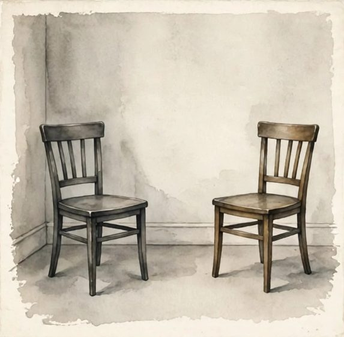
Two chairs facing each other across an empty room.
Every investigation reaches the moment of suspicion, when the detective turns from the evidence to the person closest to the case, and the file notes, with what the keeper insists is affection rather than drama, that the suspect has an alibi. It was Tuesday. The ordinary, unglamorous Tuesday of an ordinary week, on which the supposed mystery of the self was, in fact, at work, at the shops, asleep by eleven. Nothing concealed. Nothing staged. The strange behaviour under investigation took place in broad daylight, between the bus stop and the office door, performed by a person whose whereabouts are accounted for by a bus pass.
The alibi of Tuesday is the keeper's favourite document in the whole case, because it corrects the investigation's one recurring error, which is glamour. We suspect ourselves of depths, of hidden machinery, of a secret author behind the ordinary one. And sometimes there are depths. But most of the file, once the glamour is removed, describes a person who was simply tired that year, or young, or doing their best with the information available on a Tuesday, in rain, with a headache. The suspect is not a mastermind. The suspect is a commuter. The case improves enormously when this is entered into the record.
Let the record show, then, that the keeper declines to treat the resident as a suspect at all beyond the courtesy of the joke. A suspect is someone whose ordinary account of themselves is presumed false until proven otherwise, and no house can be lived in under that presumption. The alibi stands for a better working rule: believe the Tuesday. Believe that most of what a person does, including the puzzling parts, was done by the person they openly are, for reasons they could mostly state if asked at the right hour, in the right chair, with tea. The mystery that remains after Tuesday is believed is smaller, quieter, and real.
33Motive Is a Slippery Witness
Of all the witnesses in the case, motive is the slipperiest, and the keeper cross-examines it longest. Ask a person why they chose the city, the trade, the partner, the life, and they will answer fluently, with reasons that hang together and quote well. The fluency is the warning sign. Reasons given years later are built years later, from materials the present supplies, and they describe the present's opinion of the past more faithfully than the past itself. The actual choosing, at the time, was done with a fraction of the information, a surplus of weather, and a timetable that nobody now remembers. The motive, reconstructed, is a portrait of a motive, painted from life that has changed sittings.
This is not an accusation of dishonesty, and the office wishes that noted in the record. The witness is not lying. The witness is reporting, sincerely, from a country that no longer exists, in a language learned since. Everyone's past motives are partly fictional in exactly this honourable way, the way all maps are partly fictional: simplified for use. The keeper accepts motive testimony the way maps are accepted, as a working document, and declines only to build verdicts on it. A life explained entirely by its stated motives is a life edited for the brochure. The file prefers the unedited version, in which chance and weather and Tuesday all have their paragraphs.
Handled this way, motive remains useful, even precious, as evidence of something else: of what the resident now values, now regrets, now hopes. The reasons a person gives for their past are a reliable portrait of their present, which is, after all, the resident the office actually has dealings with. Ask why, then, but file the answer under the current year, not the year in question. The slippery witness, correctly dated, tells the truth after all. It was simply never the truth about the time the detective assumed. Few witnesses are. The file makes allowances, and proceeds.
34The Case Is Not a Crime
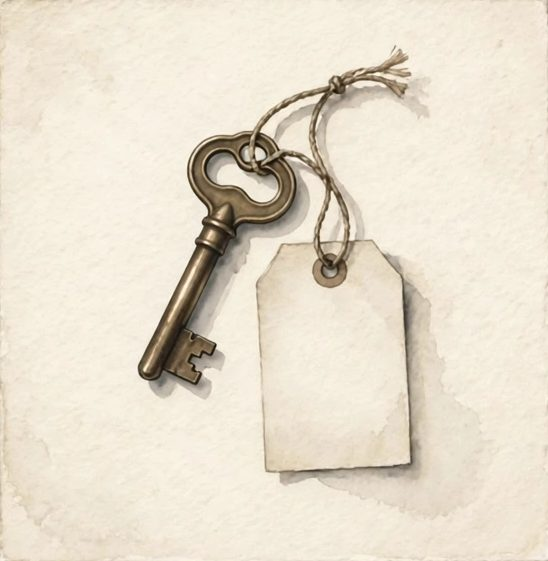
A key tied with a blank paper tag, lying on an open file.
It needs to be said plainly, in the middle of the file, before the language of cases hardens into the language of blame: the case is not a crime. Nothing in this house was stolen. Nobody in this house is accused. The unsolved question of who lives here is not a offence awaiting a culprit, and the resident is not a defendant who has failed to explain themselves to the satisfaction of the court. The keeper has seen investigations go wrong at precisely this point, when curiosity, denied a solution, turns prosecutorial, and the person begins to be treated by their own detective as a suspect in the matter of being themselves.
The correction matters because tone is method. A house investigated as a crime scene gets a crime scene's findings: suspicion everywhere, innocence nowhere, every ordinary object lit like evidence of concealment. A house investigated as a home gets a home's findings: partial knowledge, mixed motives, Tuesdays. The keeper's office was founded on the second tone and keeps it deliberately. The resident's cooperation, which is the whole basis of the inquiry, is extended to a detective who knocks, and withdrawn, quite properly, from a detective who kicks doors and dusts the furniture for guilt.
So let the record be cleared of any charge. The file concerns a mystery, not a misdeed; a house, not a scene; a resident, not a suspect. Where the investigation has caused the resident distress, the distress is noted as a failure of the investigation, never of the resident. And the office's standing instruction, written on the inside of the cabinet door where every new keeper sees it on the first morning, is the shortest in the building: nobody here is in trouble. Proceed gently. The case will keep. It has kept for decades already, in a warm house, and no harm has come of the keeping.
35Notes in the Margin of the File
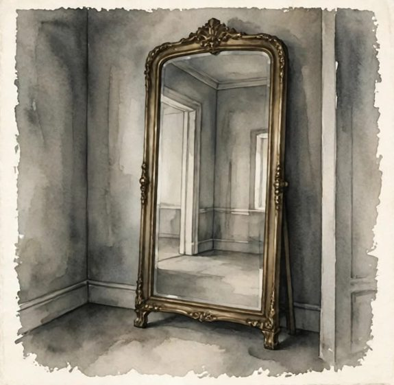
A tall mirror in a dim hall, reflecting an empty room.
The official file is only half the archive. The other half lives in the margins: the keeper's pencil notes, added across years in the white space beside the evidence, in handwriting that changes as the keepers change. Worth asking again in spring. She laughed here; the transcript does not show it. This page contradicts page forty and both are true. The margins are where the investigation keeps its honesty, because the official text must sound certain to be filed at all, and certainty, in this office, is a costume worn for the paperwork. The margins wear no costume. They are the file thinking aloud, and they are usually right before the text is.
Every resident keeps such margins in the privacy of their own file, whether they write them or not. They are the asides of a life: the private footnote to the public decision, the reservation entered silently at the moment of agreement, the small print of the heart. Officially, the job was taken for the salary. In the margin: for the city, for the light in the stairwell, for a person glimpsed once in the corridor of the interview building. The margin is not the lie beneath the text. It is the rest of the truth, the part that did not fit the form, and a file read without its margins is a file half read.
The keeper's advice is to write the margins down, somewhere, somehow, even badly. A note in an actual margin, a sentence in a diary, a letter never sent. The official story of a life will be preserved by other people anyway; they keep excellent records of surfaces. The margins are perishable. They exist in one copy, in pencil, in one person's keeping, and when they are lost the file becomes the kind of archive historians despair of: complete, consistent, and missing the point. Keep the margins. Future keepers of your own case, including the oldest edition of yourself, will read the file by them.
36Some Cases Close Themselves, Years Later
The keeper's final word on the case, for this hall of the house, is the one new investigators find hardest to believe: some cases close themselves, years later, without being worked. The question that resisted a decade of attention simply completes itself one afternoon, sideways, while the resident is thinking about groceries. A sentence in a stranger's book. A face in a crowd that resembles someone lost. Nothing is done. Nothing is forced. The file, left respectfully alone in its drawer, has quietly finished its own paperwork, and the answer, when it surfaces, has the unmistakable feel of a letter that was always in the post, delayed by weather no one controlled.
There is a mechanism, if mechanism is wanted, and it is disappointingly unglamorous. The mind continues its errands below the floor of attention, sorting the unsorted in idle hours, and it works best, like certain glues and certain doughs, when left entirely alone. The years also do their part: they supply the missing witnesses. A question about a parent cannot ripen until the asker has been a parent, or failed to be, or watched the attempt at close quarters. Time is not the enemy of the case. Time is the case's senior investigator, and its methods include long silences that look, from the corridor, exactly like neglect.
The keeper therefore closes this hall of the file with an instruction to wait well. Waiting well is not the same as waiting tensely, key in hand, ear to the drawer. It is the keeping of a warm house with the file findable and the kettle on, in the confidence that what ripens will arrive and what does not ripen was perhaps a question shaped like a fruit and actually a stone. Either discovery is a form of closing. The office records both without preference. Some cases close. Some cases settle. The house is large enough, and patient enough, for the whole range of endings.
37Mirrors and False Bottoms
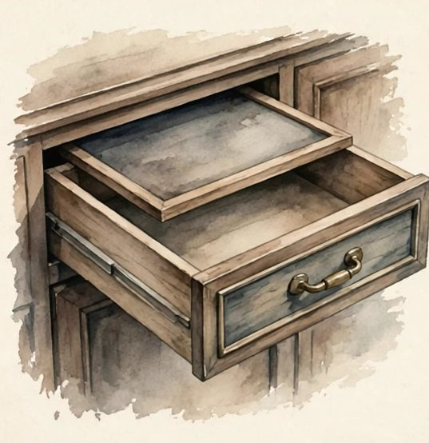
A wooden drawer pulled open, showing its false bottom.
Among the furniture of a self, two pieces deserve their own hall: the mirror and the drawer with the false bottom. The mirror because it is the house's oldest instrument of self-knowledge, consulted daily and believed far beyond its accuracy. The false bottom because every keeper of drawers eventually finds one: the compartment beneath the compartment, where the resident stores what the resident does not, on most days, admit to storing. Letters. Intentions. A whole small archive of the unposted and unsaid, kept not in shame but in the ordinary human instinct to have one place that is only one's own.
The keeper wishes both pieces approached without melodrama. A false bottom is not a scandal; it is joinery. Every well-made life has private compartments, and their existence proves nothing except that the maker understood drawers. Privacy is not concealment of a crime. It is the ordinary architecture of an interior, and a house in which every drawer opened straight to the street would not be honest. It would be unfurnished, windy, and impossible to live in. The keeper defends the false bottom the way one defends a lock on a bathroom door: as a courtesy the house extends to its own resident.
This hall will therefore walk slowly past mirrors and drawers, trying the handles, noting what each shows and what each declines to show. No furniture will be broken open. Nothing will be carried off for examination under brighter lights. The keeper's interest is in the craftsmanship: in how a person is built with surfaces that reflect and compartments that reserve, and in how peacefully a resident can live once they stop apologising for the joinery and start, simply, dusting it. The mirrors keep their counsel, and the drawers keep theirs, and the house is none the poorer for either.
38The Mirror Answers Slowly
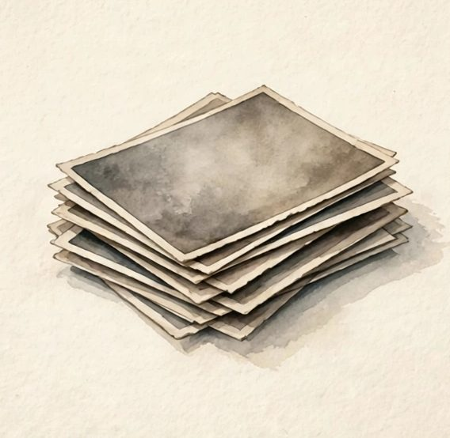
A stack of old photographs lying face down on a table.
The mirror is the house's most consulted witness and its slowest. Ask it a question in the morning and it answers with a face, but the answer is not the face. The answer is what the face means, and meaning arrives on a delay of years. The keeper has watched residents study mirrors with great attention and learn almost nothing in real time, then catch the same mirrors unawares, a decade later, in a photograph or a shop window, and receive the whole reply at once: so that is what was happening. The mirror had been answering all along, in its own tense, which is a kind of present that only becomes legible in retrospect.
The slowness is not a defect to be corrected by staring harder. A mirror shows the surface at the speed of light and the truth at the speed of life, and confusing the two speeds is the source of most mirror-sorrow. The resident who demands that the glass explain them by Friday will get a surface and call it a verdict. The resident who consults the glass the way one consults an old friend, regularly and without agenda, collects something better than verdicts: a continuity. The face in the mirror changes at exactly the pace the person does, and the mirror, alone among the house's instruments, never once pretends otherwise.
There is also the matter of angle. No one sees their own face as others see it; the mirror reverses, the lighting flatters or accuses, the expression arranged for inspection is itself an exhibit with a keeper's note attached. The wise resident therefore holds mirror-testimony lightly, the way the file holds all single witnesses: gratefully, and in combination. Look, by all means. Look kindly, which is harder. And remember that the glass, for all its reputation, is only reporting the outside of the house, in reverse, in one light. The inside, which the mirror has never seen, is most of the estate.
39A Drawer with a False Bottom
Sooner or later, in the tidying of some ordinary drawer, a resident finds the false bottom. It gives itself away by arithmetic: the drawer is shallower inside than out. Beneath the panel, when it is finally lifted, lies the small archive every life keeps: the letter that was never sent, the photograph that was never framed, the intention that was never announced. Nothing down there is explosive. That is the first surprise. The hidden compartment of the self rarely contains a scandal. It contains the tender, the unfinished, and the prematurely abandoned, stored flat, in the dark, in remarkably good condition.
The second surprise is how calmly the discovery can be borne. Younger residents expect the false bottom to explain everything, the way younger investigators expect one document to close the case. It explains something smaller and better: that the resident has always had a private interior, even from themselves, and has managed it with a craftsman's instinct, storing what could not yet be used and need not yet be discarded. Not everything unexamined is a wound. Some of it is stock, laid down against a future season, by a person who trusted that a season would come in which these flat, dark-kept things would be wanted again.
The keeper's handling instructions are brief. Lift the panel in daylight, at a chosen hour, not in a crisis at midnight. Look at everything once, without verdicts. Return what is still private to its privacy, without apology; a false bottom refilled knowingly is a different object from a false bottom forgotten, because now the resident and the drawer are in collusion, and collusion of that kind is called privacy, and privacy is a right the house extends even against its own detective. Close the drawer. The arithmetic of the room is unchanged, and the resident is larger for knowing exactly how.
40What the Photographs Prove, and Don't
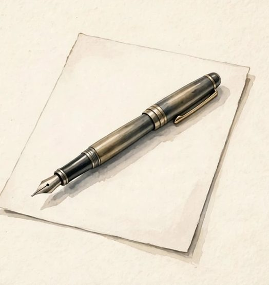
A fountain pen resting on a sheet of blank paper.
The photographs are the file's most persuasive exhibits and its least reliable ones, and the keeper admits them with a warning label. A photograph proves that a person stood in that light, in those clothes, with that expression, for the fraction of a second the shutter allowed. This is real proof and it is not nothing. But the photograph does not prove the day around the second, or the year around the day, or the feelings that the expression is so often recruited to testify about. The smiling portrait from the hardest year of a life is a true photograph. It is also, as evidence of happiness, a forgery the camera committed innocently, by telling the truth about a sixtieth of a second.
Residents make two opposite errors with the family archive. The first is to believe it entirely: to let the framed and captioned surfaces stand as the record, and to file the unphotographed majority of the life, the ordinary Tuesdays, the unrecorded rooms, as if they were the gaps in the story rather than the story itself. The second error is to dismiss it entirely, as propaganda, and lose the genuine evidence it carries: the posture learned from a grandfather, visible in a snapshot before it was visible anywhere else; the friend's hand resting, unposed, on a shoulder, saying what the whole correspondence never managed to say aloud.
Between the errors lies the keeper's practice: photographs are witnesses, and are treated as witnesses are treated in this office. Heard with respect. Dated. Cross-checked. Never alone on the page. A photograph can corroborate a memory and can just as usefully contradict one, and both services are valuable, since the file is not a shrine but a record. What the photographs prove, finally, is modest and moving: that the house has been lived in, in all weathers, by a person who kept turning up in the light to be recorded. The rest, as always, is interpretation, and the interpretation is kept in pencil.
41Your Handwriting at Twenty
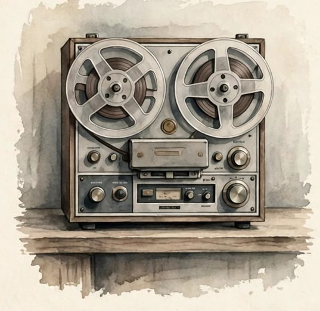
An old reel-to-reel tape recorder on a shelf
Somewhere in the house there is a sample of your handwriting from twenty, kept in the margin of a book or on the back of an envelope that was never sent. The letters lean further forward than they do now, or further back, and the crossings are heavier, as if each word were pressed into service before it was quite ready. The keeper files it without alarm. Handwriting is a witness of the plainest kind: it says what the pen was doing, and where the hand that held it thought it was going, and it says nothing at all about whether the hand was right.
It is tempting to read the younger script as evidence of a younger self, settled and known, and to hold the two scripts up as before and after. The keeper resists this. A line of writing proves only that a person sat down once and wrote; the slope of it proves the desk was tilted, or the hour was late, or the writer was in a great hurry to get somewhere they have since forgotten. Testimony this thin should be handled the way all thin testimony is handled in a careful house: noted, dated, and allowed to remain partial, like every other clue on the shelf.
Still, the page is worth keeping, and worth visiting now and then without an agenda. Not to decode the twenty-year-old, who is not a code, and not to correct them, which would be poor hospitality across the years. Simply to notice that the same hand, given a different pen and a different decade, writes its name two ways and means it both times. The mystery is not which script is the true one. The mystery is that both are, the way both keys on one ring are true, each cut for a lock the house contained at the time.
42The Voice on Old Recordings
An old recording, found in a drawer or at the end of a forgotten tape, returns the voice you used to keep. It is higher than the one you hear from inside, or flatter, or quicker to laugh, and for a moment the room holds two residents at once. The keeper of keys has heard this particular surprise in every corridor of the house and logs it as routine. The voice on the tape is yours, the way the key on the ring is yours: carried for years, rarely examined, and stranger in the hand than it ever felt in the pocket.
Listening closely, the differences sort themselves into two piles. Some are machinery: the tape ran slow, the room was small, the microphone was kind or unkind. Others are weather: the voice of a person who had not yet learned which sentences they would be asked to say often, saying all of them as if each might be needed. Neither pile is a verdict. A recording, like a photograph, is a clue with its edges torn — it proves the moment existed and preserves its sound, and beyond that it asks to be believed only as far as it goes.
The keeper's practice with such finds is plain. Play the tape once, all the way through, without stopping to argue with it. Let the younger voice finish its sentence, which it has been waiting decades to do. Then put the tape back in its drawer, neither promoted to evidence of who you were nor demoted to a stranger's performance. It is a key that opens one afternoon, faithfully and completely, and no other door in the house. That is enough work for one key. The bunch is heavier for it, and the house is not smaller.
43Signatures That Changed
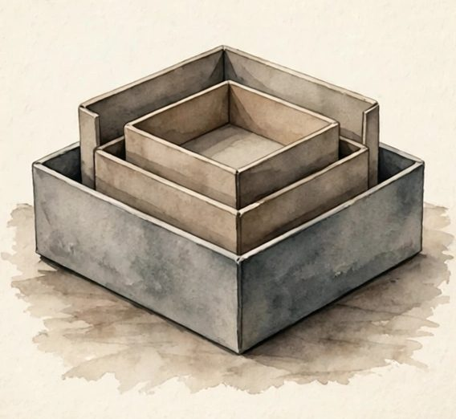
Boxes nested one inside another on a table
Lay out your signatures across the years and you hold a small parade. The earliest is careful, almost printed, each letter reporting for duty. Then come the flourished ones, the hurried ones, the one from the years of signing many things a day, worn down to a gesture and a dot. The bank accepts them all, which is its own quiet testimony: a signature is not a portrait, and it was never required to stay the same in order to stay yours. It only has to be the mark you make, made by you, at the time of making.
It would be easy to treat the parade as a decline or an improvement, and the keeper has seen both readings framed and hung. But the signatures are not grades. They are closer to the wear on a key's teeth: the shape changes because the key has been used, in real locks, on ordinary days, and the changing is the record of the using. A signature that had never altered in forty years would not prove a steadier self. It would suggest, if anything, a door that was never opened, a hand that signed nothing it had to stand behind.
So the file keeps them in order and draws no arrow between them. The looped one is not the true self dressed for company; the scrawled one is not the true self tired of pretending. They are entries in a ledger the hand has kept without being asked, proof that identity in this house is not a single inscription but a long series of them, each valid on its date. When the parade is put away again, the keeper notes only this: the name underneath has not changed, and everything it has signed for still stands.
44The Reflection Is a Clue, Not a Verdict
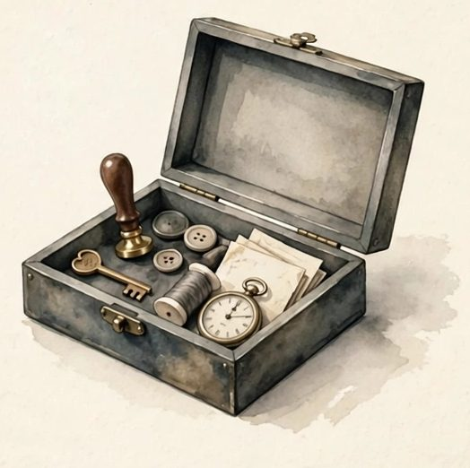
A keepsake box of small ordinary objects
The mirror in the hall gives its evidence every morning, promptly and without commentary. It reports the face the house is currently wearing, the weather it slept in, the years it has been collecting like postmarks. What it does not report, though it is often asked to, is the whole of the person standing there. The keeper ranks the mirror low among witnesses, not because it lies — it almost never lies — but because its testimony covers exactly one surface, at one hour, in one light, and it is silent on everything underneath.
Trouble begins when a clue is promoted to a verdict. A reflection taken as a verdict settles questions it was never built to settle: it decides the day, sometimes the decade, on the strength of a tired face in unkind light. The house has a standing rule about this, written into the register in a firm hand. Clues are to be weighed, compared, and set beside other clues — the voice on the tape, the handwriting at twenty, the testimony of the hands. A single clue, however bright, however early in the morning it arrives, does not close a case.
Used properly, the mirror is a decent servant. It will tell you the collar is crooked and the night was short, and it will hand you back your own expression to consider, which is real information, briefly held. The keeper suggests receiving it the way one receives weather at the door: noted, dressed for, and not mistaken for the climate of the whole house. Then walk past it down the corridor, where the other witnesses are waiting with their slower, deeper reports. The reflection stays in its frame, accurate and incomplete, like every honest clue.
45Boxes Within Boxes
Every house of any age contains boxes within boxes: the tin inside the trunk, the envelope inside the tin, the folded note inside the envelope, each layer put there by a hand that thought the thing worth one more degree of keeping. A person is stored the same way. There are the accounts given freely at the door, the accounts given to friends in the kitchen, and then the smaller containers, which are not locked out of shame but out of plain architecture. Some things are simply packed deep, the way winter things are packed deep.
The mistake is to assume the innermost box holds the truest thing, as if value increased with depth and the last container were the self itself. The keeper has opened enough of these, in enough houses, to file a correction. Sometimes the smallest box holds a treasure. Sometimes it holds a bus ticket, a button, a recipe in an ancestor's hand. The depth of the packing says something about the packer and the year it was packed. It does not grade the contents, and it does not mean the outer boxes were disguises. They were storage, each honest at its level.
So the boxes are kept, and mostly left closed, and their existence is not treated as an accusation. A life that could be emptied onto the table in one motion would not be a simpler life; it would be a shallower house. The keeper walks past the stacked containers the way one walks past any well-kept store-room: grateful that things were put away with care, untroubled that they are not all on display. Some of the boxes will be opened in their season. Some will be handed on, still shut, to the next keeper of the house.
The Key Desk
One desk receives all correspondence for this house — questions, corrections, keys returned, keys reported found, word of any door that opened or any room you finally sat in. It is read in the order it arrives.
46What You Kept, and What That Says
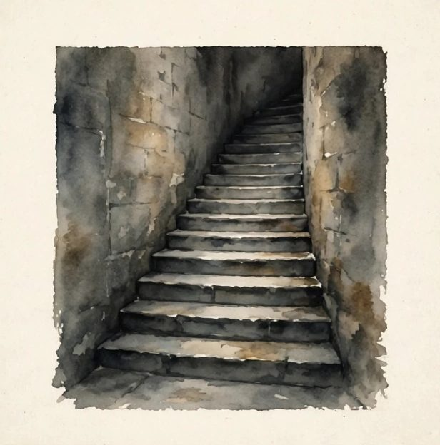
A narrow staircase descending into dim light
What a person keeps is a form of testimony that cannot be coached. The testimony is not in the speeches, which are edited, but in the shelf of kept things: the ticket stub from a journey that mattered, the tool of a trade no longer practiced, the letter kept past every reasonable date for keeping it. The keeper reads these shelves the way the register reads all evidence — slowly, and without assuming the collection was assembled on purpose. Most of it was not. It accumulated the way keys accumulate, one unconsidered keeping at a time, and that is exactly why it can be trusted.
It says, first, what the house thought was worth its space, which is a more honest budget than any account of values. It says what was reached for in the moment of almost-throwing-away and set back down. There will be surprises on the shelf, and the keeper advises against explaining them too quickly. The object from the phase that was supposedly outgrown, kept through three moves, is not a contradiction in the record. It is the record, doing its ordinary work: reporting that affection files its own papers and does not consult the official story before doing so.
Equally eloquent is what is missing. The gaps on the shelf mark the years of travelling light, the seasons when keeping itself felt like too much house to carry. Nothing is owed to those gaps; they are not evidence of a colder self, only of a lighter one. The keeper closes the inventory there, with the shelf as it stands: partial, unargued, and more truthful for having never been arranged for an audience. A person's kept things are a bunch of keys in another material — each one retained because, once or still, it fit something.
47The Attic Keeps Its Own Ledger
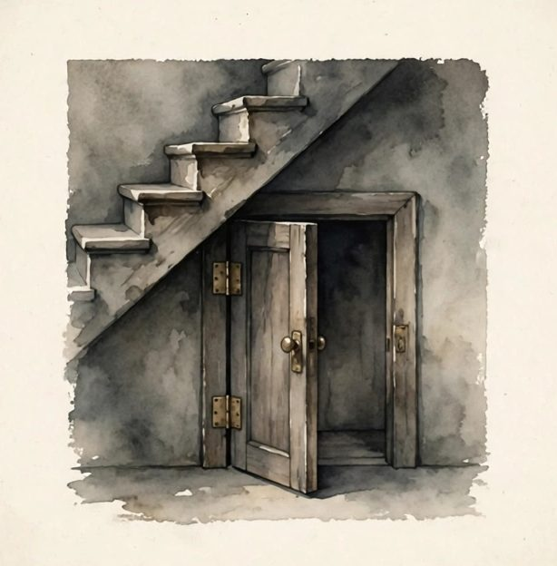
A small door under a staircase, standing ajar
At the top of the house, under the slope of the roof, the attic keeps the records nobody consults. Boxes went up there in years when the downstairs rooms were full, and the attic accepted them without asking what they proved. Its ledger is not written in ink. It is written in placement: what was stored near the stairs because it might be wanted again, and what was carried to the far dark corner because it would not be, and both decisions were made by hands that belonged to the same person, in different weathers.
The keeper climbs up rarely, and never with a warrant. The attic's accounts are real but they are not current, and reading them as if they described today's house is the commonest error in the whole investigation. A box of evidence from the winter of one year will swear, quite sincerely, that the house is a cold place. The attic is not lying. It is simply reporting the season in which its stock was laid down, and seasons, in a long tenancy, are not verdicts either. They are strata, and strata are read downward, in order, with the dates kept straight.
There is comfort in the attic's method, and the house could borrow more of it. It keeps everything and concludes nothing. It does not arrange its boxes into a story or throw out the ones that embarrass the current arrangement of the rooms below. When the keeper comes down the narrow stairs again, the register gains an entry and loses nothing. The past of the house is upstairs, in the dark, neither driving the household nor denied a roof. That, the keeper notes, is about the right terms for old evidence to live on.
48Under the Stairs
Under the stairs there is a small space that appears on no plan of the house. It holds the broom, the spare bulbs, the toolbox with the one wrench that fits, and the things that belong to no room and so belong to all of them. Every house has such a place, low and triangular and easily forgotten, and every person carries its equivalent: the store of unnamed capacities and leftovers that the official rooms have no shelf for, kept in the dark because there was nowhere else, not because they were hidden.
The keeper checks under the stairs more often than the grand rooms, on a professional principle: the house runs on what is stored there. When a pipe bursts or a fuse gives out, nobody consults the library; somebody goes, by memory and by feel, to the space beneath the stairs, and comes back with the means of repair. So it is with the unglamorous stores of a person — the patience kept for emergencies, the skill from an old job, the calm that has no occasion in fair weather. Their address is humble. Their testimony, when called, is decisive.
Nothing under the stairs is displayed, and nothing there minds. The keeper's only rule for the place is that it be visited kindly and kept in rough order, so that what is needed can be found by touch on a dark night. The mystery of the house is usually sought in its locked rooms and high windows. But some of it lives at knee height, behind a small door nobody paints, holding the plain equipment by which the whole building is maintained. The register files the space under essentials, and moves on.
49The Parts That Answer, the Parts That Don't
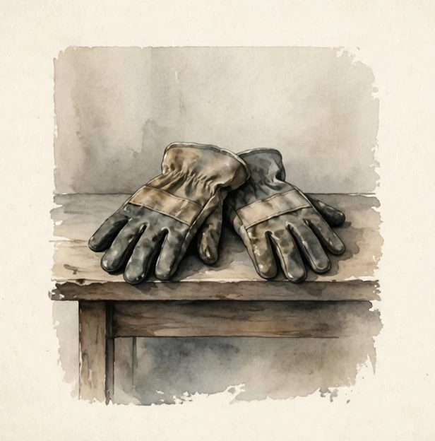
A pair of worn work gloves on a bench
Ask the house a question and the answers arrive unevenly, from different floors, at different speeds. Some parts of a person answer at once, clearly, in full sentences: ask about the work, the loyalties, the road home, and the reply is ready before the question has finished. Other parts consider the matter for a decade. A few have never answered at all, and the silence from those rooms has been mistaken, by impatient investigators, for emptiness, or for refusal. The keeper's register records it differently. In this house, a slow answer is still an answer in progress.
The unevenness is not a malfunction, and it does not sort by importance. Some of the largest questions — what the house is for, whom it was built by, which rooms are load-bearing — are exactly the ones the deeper floors take longest to reply to, because their answers are built rather than spoken. Meanwhile the shallow questions get their quick, bright replies and are done. The keeper advises against grading the parts by their promptness. A bunch of keys is not judged by which key is reached for first. Each fits its own lock, in its own season of being needed.
So the inquiry proceeds at the pace of the slowest honest witness, which is slower than anyone prefers and faster than anyone fears. The parts that answer keep the household talking; the parts that do not are not struck from the register or reported as hostile. They are left on the list, door noted, key untried or tried and waiting. The house is under no obligation to be fully interviewed in one lifetime of asking. It is enough that the questions are kept in good order, and the answers, as they arrive, are written down plainly.
50The Hands Answer First
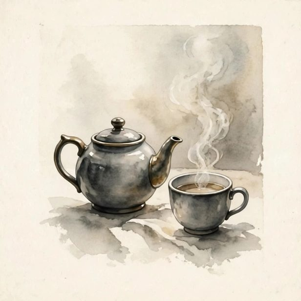
A teapot beside a filled cup, steam rising
Before the mind has finished waking, the hands have already answered the day's first questions. They find the kettle, judge the weight of the cup, take the banister at the turn of the stairs where it has always been taken. The hands carry a knowledge that was never written down anywhere in the house: how much force a familiar door requires, how the old tool balances, where the light switch waits in the dark. Asked how they know, the hands have no account to give. They simply proceed, and the proceeding is the testimony.
The keeper counts this among the most reliable evidence in the building, precisely because it cannot be rehearsed. What the hands know was learned by the body keeping company with the world, repetitions laid down like sediment, and it survives every revision of the official story. A person may change their account of the past three times and still reach, unerringly, for the right key on the ring in the dark. The hands are not impressed by narratives. They report what practice taught them, and practice, unlike memory, does not tidy its evidence for presentation.
It follows that a house investigating itself should interview the hands early and often. Not for confessions — the hands have none — but for the plain record of what this life has actually done, day by day, at bench and stove and desk. The record will contradict the speeches sometimes, and the keeper lets it stand uncorrected in the file. Long after the questions about the house have quieted, the hands will still be answering first: reaching, mending, holding. Their fluency is not a solution to the mystery. It is one of its oldest rooms, in daily use.
51What the Body Reports
The body files its report without being asked, in a hand too plain to argue with. It reports the season in its joints, the years in its preferences for chairs, the true state of rest in the quality of its mornings. It keeps no opinions and offers no interpretations, which makes it the most disciplined witness in the house. Where the other witnesses remember, the body simply registers: this much carried, this far walked, this weather endured. The keeper transcribes its reports into the register exactly as given, without translating them into anything more dramatic.
Its testimony is honest in a particular way worth naming. The body does not know the official story and cannot be recruited to support it. It will report tiredness in a triumphant year and an unexpected spring in a difficult one, and both entries are entered without apology. This independence is sometimes read as betrayal, as if the witness had changed sides. The keeper reads it as the opposite: a witness who cannot be coached is the only kind worth building a case on. The body's reports are clues, though — like all clues in this house, they describe and do not conclude.
So the reports are received with the respect due to plain evidence. Not obeyed as verdicts, not argued with as inconveniences, but kept current, the way a keeper keeps a roof inspected: because the house is lived in, and what it reports today will be needed as the baseline for whatever it reports in ten years. A person who listens to these reports without flinching or inflating learns the size of their house from the inside, one honest measurement at a time. That is not the whole mystery. It is solid floor under the asking of it.
52Tastes That Changed Without Permission
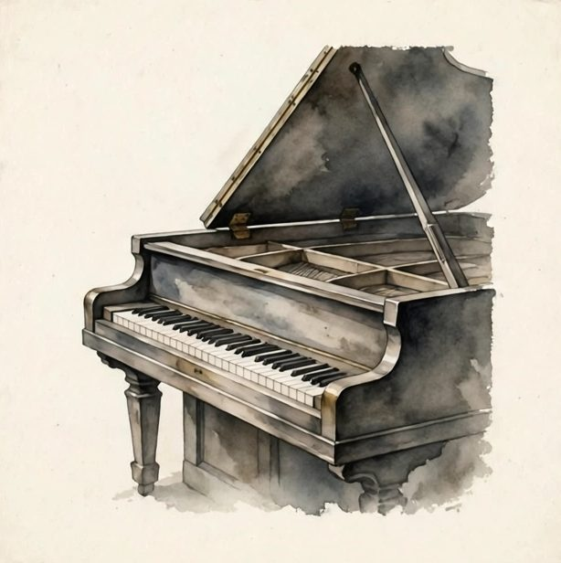
A silent piano with its lid open
Nobody signed for the change. One year the strong tea is a pleasure and the next it is an imposition; a food loved for decades is set down, mid-meal, with the quiet finality of a key returned to its hook. Tastes alter in this house without consulting the office, and they do not file their reasons. The keeper, who has logged many such revisions, notes that they are rarely whims. A taste is a small treaty between the body and the world, and treaties are renegotiated when conditions change, whether or not the negotiations are announced.
The temptation is to treat the old taste as the authentic one and the new as a falling away, or the reverse — to grade the palate's history as progress or decline. The register declines both readings. The love of bitter things at twenty and the love of plain things later are entries in the same ledger, neither corrections of the other. A house that has been lived in for a long time has been cooked in for a long time, and its kitchen rules have been rewritten by every season of appetite and scarcity, in handwriting that changed as it went.
What the keeper recommends is simple attention, served without alarm. Notice what the table asks for now. Let the retired tastes keep their shelf in the pantry, neither mocked nor made into monuments, the way retired keys keep their place on a spare ring. Some will be taken up again in a later season; the house has seen it happen, an old flavour returning like a key that fits a lock rebuilt by time. The rest remain as evidence that the resident is still being edited by living, which is not a discrepancy in the record. It is the record.
53The Part That Laughs
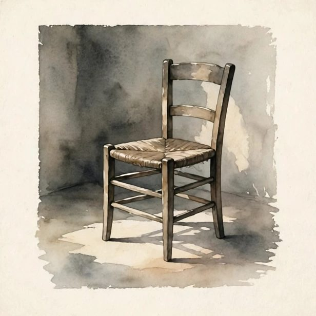
An empty chair in a pool of quiet light
There is a part of the house that laughs, and it does not wait for permission from the serious rooms. It laughs at the dropped key and the pompous sentence, sometimes at funerals of dignity that nobody else noticed taking place. The keeper lists this part among the senior staff. Laughter in this building is not decoration and it is not escape; it is one of the house's oldest instruments for telling the truth at a bearable volume. What the laughing part finds funny is evidence of a high order, because it cannot be produced on demand or corrected for the record.
Its testimony is easy to overlook precisely because it arrives without solemnity. But the register keeps careful notes: the jokes that have survived forty years of retelling, the absurdity that still undoes the house's composure, the particular helpless laughter that belongs to one friendship and no other. These are coordinates. A map of what a person laughs at, kept honestly over time, outlines the house as faithfully as any inventory of its sorrows, and with better company along the way. The part that laughs is not the least serious witness. It is the one whose evidence arrives smiling.
The keeper's only caution is against assigning it duties it never applied for. The laughing part will not perform at inspections and goes silent, prudently, in houses where it is graded. Left to its own hours, it does the maintenance no other part can do: it lets the pressure out of sealed rooms, one small mercy at a time, and reminds the whole household that an unsolved house is not a grim one. The mystery keeps its dignity. And down the corridor, at irregular intervals, somebody is laughing — which the register records, without further comment, as a sign of good working order.
54The Part That Goes Quiet
In every company there are subjects at which one part of the house simply goes quiet. The conversation arrives at a certain door and the voice that has been fluent all evening steps back, offers tea, changes the weather. The keeper has watched this happen in the best-kept houses and files no complaint about it. Quiet is not the absence of an answer. It is frequently the answer's oldest form — the part that goes quiet is often the part that knows the most about the room in question and has the least interest in summarizing it for visitors.
There are, of course, different silences, and the register distinguishes them without forcing any of them open. There is the silence of the empty room, where nothing has lived yet. There is the silence of the full one, where too much is stored for a quick inventory. And there is the guarded silence, kept by a part that was once interrupted mid-sentence and has not forgotten it. A wise keeper does not treat these as one condition with one remedy. Doors that are quiet are noted, their hinges left unoiled by pressure, their keepers thanked for their service so far.
Time does most of this work unassisted. Rooms that would not speak in one decade give their testimony in the next, plainly and without drama, as if they had only been waiting for the house to become a place where such sentences were safe to finish. The keeper's contribution is mostly to wait well: to keep the corridor lit, to not mistake the quiet part for a locked problem, and to remember that a house is not obliged to narrate its depths on schedule. The quiet, too, is entered in the register — as testimony, dated, and left in peace.
55Skills You Don't Remember Learning
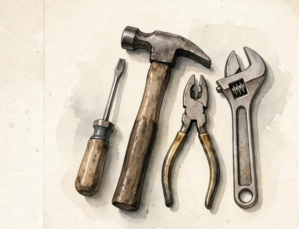
A set of hand tools worn smooth by use
Every so often the house surprises its own keeper. A language comes back at a border crossing, thirty years after the classroom. A knot is tied correctly by fingers that were never taught it, a chord resolves under hands that stopped lessons in another century. Skills arrive in this building by routes the register cannot always trace, and they report for duty fully formed, as if a key had been cut long ago by a locksmith nobody remembers hiring. The keeper logs them with respect and a certain professional humility. Not everything in the house passed through the front office.
The temptation is to build a theory from such finds — to posit a hidden tutor, a buried chapter, a room where the learning secretly happened. Sometimes there was one: a grandfather's workshop, a summer's work, a friend's patience, filed under other headings and forgotten by the part that keeps the accounts. Sometimes there was only the slow instruction of living itself, which teaches without lessons and examines without notice. Either way, the skill is real evidence, and like all evidence here it is permitted to be partial. It proves the house has more floors than its map. It does not oblige anyone to find them all.
The keeper's practice is to put such skills to honest use and let their origins rest. A competence without a pedigree is not a forgery; it is a key whose first lock is forgotten, still turning smoothly in present ones. The house is full of these small unexplained proficiencies, and they are among its most companionable mysteries — proof that the resident has been taught by more teachers than they can name, and has kept more of the teaching than they know. The register closes the entry there, the file a little thicker, the house a little less surprised by itself.
56The Part That Keeps the Accounts
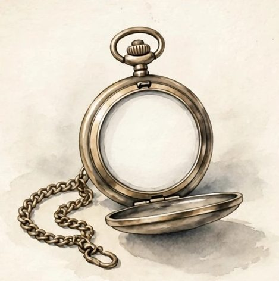
A pocket watch with a blank face
Somewhere in the house a part keeps the accounts, and it has never once lost a receipt. It remembers what things cost — not in money, mostly, but in the currencies the house actually trades in: the favour owed since one spring, the apology still outstanding, the afternoon given away and entered, without resentment, under expenses. Other parts of the house are poets and improvisers. This one is a clerk, and the keeper relies on it the way one relies on any honest bookkeeper: completely, and with occasional gratitude that somebody is watching the columns.
Its testimony is unfashionable and indispensable. Asked who a person is, the accounts answer with what the person has actually spent themselves on — the hours, which cannot be argued back into the bank. The ledger shows the true proportions of a life more faithfully than any declaration of values: so much for the work, so much for the worrying, so much, entered in a smaller hand, for the people. The keeper does not call this the whole truth. But it is a portion of the truth that does not flatter, and portions that do not flatter are rare enough in any investigation to be prized.
The clerk is not a judge, and the house is healthier for insisting on the distinction. The accounts record; they do not sentence. Debts in the ledger are noted without interest charged in anger, and the generous entries are kept as carefully as the costly ones, which is the clerk's quiet fairness. When the keeper makes the night round, this is one of the doors paused at longest — not to audit the resident, but to honour the part of them that has kept faithful books through every season, asking nothing but that the record, at least, be straight.
57Answers That Arrive in Dreams
Some mornings the house wakes with an answer it did not have at bedtime. The question that circled all evening has settled, in the night, into a simpler shape, or a dream has left behind a mood, an image, a stray sentence, and the day begins a half-step further on than the day before. The keeper records these arrivals in the register without ceremony. They are part of the house's ordinary weather. The night shift does its own tidying, in its own way, and hands the rooms back in the morning roughly as it found them, with one or two things quietly rearranged.
It matters what the house does not claim for these arrivals. A dream is not a delivery from elsewhere, and its images are not instructions; the keeper has never once entered one in the file as evidence, and does not intend to start. What the night produces is the house thinking in its sleeping clothes — the day's loose ends gathered up, tried against each other, sometimes knotted, sometimes simply set in a neater pile. An answer found at dawn deserves the same handling as any other clue: weighed in daylight, set beside the other testimony, and believed exactly as far as it holds up.
That is quite far enough, some mornings. The keeper's rule is hospitality without superstition: receive the night's work politely, make tea, and test the new shape of the question against the ordinary evidence of hands and habits and kept things. If it survives breakfast, it earns its place in the file. If it dissolves, it was weather, and weather is not required to mean anything. Either way, the house wakes a little less like a stranger to itself — not because the night solved anything, but because the asking went on, quietly, even in sleep.
58The Part That Answers for You in Public
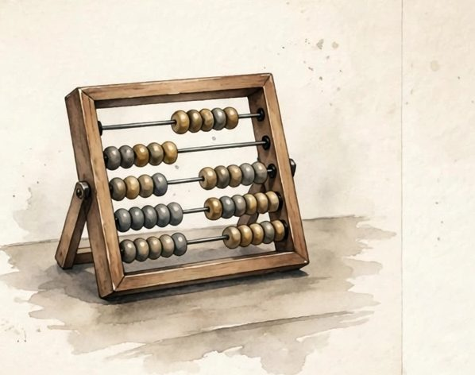
A small wooden abacus on a desk
Every house keeps a member of staff at the front door: the part that answers for the resident in public. It has the introductions by heart, the explanations polished to a shine, the acceptable version of every story ready in the acceptable length. The keeper does not begrudge it its office. A house that received every caller in its dressing gown would exhaust itself by noon, and the front-door part performs real labour — it keeps the world's weather off the inner rooms while they go about their slower business.
Trouble is recorded only when the front door begins to file the reports. The public answer, repeated often enough, can start to sound like the whole testimony, even to the house itself, and the register has a marginal note for exactly this condition: spokesman, not resident. The polished account of what the resident does and loves is a clue like any other — real, partial, and slanted toward what callers can understand. The keeper weighs it accordingly and checks it, now and then, against the quieter witnesses in the back rooms, whose versions are less fluent and occasionally more current.
The wise arrangement is a division of labour, openly kept. Let the front-door part greet, present, and deflect, for it is gifted at all three; and let the house remember that the greeting is not the household. When the door closes at evening and the staff comes off duty, the resident they have been answering for all day sits down in the kitchen, unintroduced at last. That unintroduced hour is not the truer self exactly — the house has retired that idea — but it is the shift change at which the whole staff can finally be in one room.
59Silence Is Also Testimony
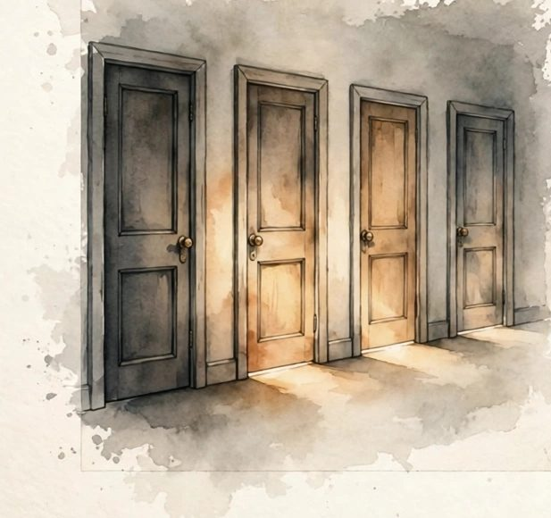
Four doors along a wall, three lit and one dark
The register has a section, growing thicker every year, headed simply: no answer received. Witnesses who were asked and said nothing. Rooms where a question was left, politely, and left again. The keeper refuses to treat this section as a failure of the investigation. Silence in this house is testimony like any other — it reports that a matter is not ripe, or not safe, or not, in the end, a question the house was ever required to answer. It is entered without interpretation, in the same plain hand as everything else, and it is allowed to mean no more than it says.
There is a discipline in receiving silence well. The impatient house shakes the door, sends the question again in a louder envelope, and learns nothing except the sound of its own urgency. The keeper's house waits. It keeps the corridor lit and the question on file, and goes on with the day's work in the rooms that do answer, which are many. Often — not always, and the register does not promise — the silent witness speaks years later, in an ordinary hour, as if the interval had been nothing but the time the sentence needed to be formed. The entry is then dated, and the long blank before it makes sense retroactively.
Until then, the blanks stay blank, and the house is not smaller for them. A register with every line filled would not be a truer document; it would be a tidier fiction. The keeper closes the section each year with the same note: silence received, nothing concluded, the witness thanked in absentia. It is the house's way of saying that a person is not a summons, and no part of them owes the investigation a statement on demand. What is not said is part of the evidence — the part that teaches the asker how to ask.
60The Parts Still Out
The hall ends, as every honest hall in this house ends, with a roll unfinished. Some parts of the resident are still out — on errands of their own, in seasons of their own, in rooms whose keys have not yet been tried because the household has not yet needed those rooms. The keeper reads the list of the absent without anxiety. A house this size is never all at home at once, and it was never designed to be. The register notes who is away, leaves their doors as they were left, and does not send out search parties for its own furniture.
This is the point at which lesser investigations declare the case a failure, and the keeper wishes the disagreement entered plainly. A person is not a puzzle that stays politely still until its pieces are counted. The parts still out are not missing evidence; they are the house in motion, living in the present tense, some of them at work in the world and some simply not yet arrived at the age when they come home and tell where they have been. Their absence from the register is a fact about timing, not about truth, and the keeper can afford to be patient with timing.
So the bunch of keys is hung up for the night with its gaps acknowledged — a ring that has never once held every key at the same time, and has opened every door it ever needed to. The parts still out will answer in their turn, or will not, and the house will be itself either way: partly interviewed, partly silent, partly still arriving. The keeper turns the lamp down in the hall with a clear professional conscience. An investigation that can end the day like this — unfinished, unalarmed, the tea things washed — has understood the house correctly.
The Key Desk
One desk receives all correspondence for this house — questions, corrections, keys returned, keys reported found, word of any door that opened or any room you finally sat in. It is read in the order it arrives.
61Strangers Inside
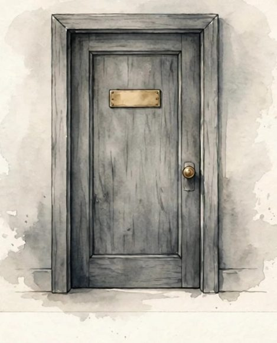
A door with a blank brass nameplate, polished by years of hands passing.
Every long-inhabited house has rooms its keeper cannot honestly claim to know. You live alongside habits that arrive fully formed, tempers that surface on Tuesdays without a forwarding address, skills that report for duty though you never signed for them. These are the strangers inside: not intruders, not guests exactly, but residents whose tenancy predates your memory of granting it. The key desk keeps their file in a drawer of its own, marked plainly and without alarm, because a house this size was never going to be furnished by one person's intentions alone.
The temptation, meeting a stranger within, is to demand papers: who sent you, what do you want, whose side are you on. The house advises a slower courtesy. Most of these tenants have been maintaining something in the dark for years — a watchfulness, a reserve of anger kept for emergencies, a tenderness too shy for the front rooms. They are strands of the same household, woven from the same years, and the fact that they were never formally introduced to the keeper changes nothing about their right to be here.
So the hall opens with a simple act of recognition. The strangers inside are part of the census. They are not the whole population and they are not a scandal; they are the rooms the mapmaker has not yet visited, inhabited all the same. The keeper of keys does not pretend the bunch is complete, nor that every door on the corridor is his to open tonight. He notes the occupied silence down the hall, sets it down in the ledger without comment, and goes on with the evening round, whistling nothing in particular.
62The Tenant You've Never Met
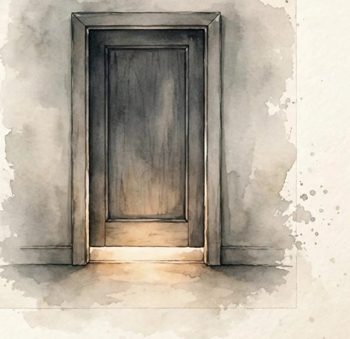
Light glowing under a closed door, steady, in a corridor otherwise dark.
Somewhere in the house there is a tenant you have never met. You know the room is occupied the way one knows such things: the light is on at hours when you were certainly asleep, small arrangements change in the corridor, and once, years ago, a cup was left washed on the draining board that no one in the front rooms would claim. The tenant keeps reasonable hours, pays in some currency you cannot name, and has never once knocked on your door to complain about the plumbing or the weather.
It is possible to spend decades in low-grade negotiation with this fact. People audit the house for the tenant's identity, leave traps of questions, lie awake rehearsing an introduction that never gets delivered. The key desk suggests the matter is simpler and stranger than that. The tenant is the part of you that took up residence during years you were busy elsewhere — the self formed in a job you have forgotten, a city you left, a long season of your life that the official biography summarizes in one sentence and the tenant remembers in full.
You do not need to meet this tenant to live well in the house. A note of acknowledgement will do: rent received, whatever it was; the room is yours as long as the house stands. Some keepers report that once the tenancy is granted without resentment, the light under the door stops feeling like an accusation and starts feeling like what it always was — proof that the house is lived in more fully than its keeper's memory, and that this, too, is a kind of wealth. The keeper enters it in the register without complaint.
63A Room Let Long Ago
Not every stranger moved in recently. One room in the house was let long ago, in a season you can date only approximately, to a version of you who needed shelter of a particular kind. The terms were never written down. Perhaps it was the year of being nineteen and certain about everything; perhaps the year of grief, when a quiet lodger who asked nothing and explained less was exactly the tenant required. The room has been occupied ever since, on the strength of that old handshake. No paperwork survives, which surprises nobody who keeps this house.
Rooms let long ago develop their own customs. The furniture in this one is arranged for a life that is no longer quite being lived: ambitions in the corner, oiled and ready, for a departure that was postponed and then forgotten; opinions on the shelf that their owner would now find surprisingly loud. None of this is an embarrassment. It is what any honest house contains — the evidence that living happened here continuously, in editions, and that no edition was required to demolish the previous one before taking up residence.
The keeper's counsel is to let the lease stand. Evicting an old tenancy by force only moves its furniture into the corridor, where everyone trips over it. The room let long ago can simply be acknowledged on the rounds: door noted, occupant respected, the past left in possession of its own small territory. A house is not required to be current in every room. It is required only to be honest about which rooms are lived in now, and which are kept, kindly, for whoever you were. The rest is weather, and the house has weather to spare.
64The Guest Who Pays No Rent
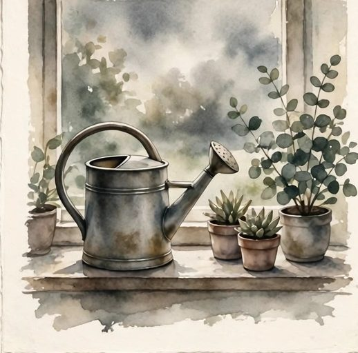
A watering can beside plants on a windowsill, the leaves green and lately tended.
Among the house's quieter residents is a guest who pays no rent, and the ledger, examined closely, shows this is not an oversight. The guest arrived during a generous year — or a lonely one, accounts differ — and was given the good room near the stairs with the customary words: stay as long as you need. The guest stayed. Decades have passed. The guest contributes nothing that can be entered in columns, attends no meetings of the household, and yet the whole house would feel the draught if the room went empty tomorrow.
What does such a guest pay in, if not rent? Possibly in ballast. There is a steadiness that comes from keeping one arrangement purely for its own sake, unbilled and unaudited, and the house may run on it more than the keeper knows. The guest might be an old loyalty, a pleasure kept past its usefulness, a grief that long ago stopped hurting and started simply accompanying. The key desk has learned not to itemize. Some occupancy is justified the way a window is justified: not by what it earns, but by what the room would be without it.
This is not an argument for keeping every freeloader the years deliver. It is a narrower observation: the accounts of a life are not the whole of its economy. Before serving notice on the guest who pays no rent, the wise keeper walks the corridor once at night and listens. If the house sounds settled — if the pipes are quiet and the stairs do not complain — the guest may be paying in the oldest currency there is, which is presence, and the ledger can close in peace. The keeper signs it off, and asks for no arrears.
65Who Waters the Plants in That Room
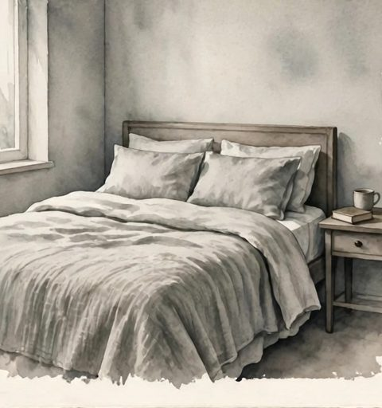
A made bed in a quiet unused room, the pillow smooth, the curtains drawn halfway.
Here is a small mystery the key desk files under evidence rather than worry. In the unused room at the end of the corridor, the plants are alive. Not merely surviving — tended. The soil is damp on a schedule nobody admits to keeping, the dead leaves are picked, the pot by the window has been turned a quarter-circle toward the light sometime in the last month. You did not do it. You would remember. And yet the geranium, indifferent to questions of agency, is in excellent health and putting out a new leaf.
One explanation is that some part of the household does its rounds without filing reports. The hands know corridors the mind has struck off the map; care gets taken in the margins of the day, in the unlogged minutes between intentions. You water the plants in that room the way you hum tunes you do not remember learning — competently, absently, and with a fidelity that suggests the task was assigned long ago to a department that does not attend meetings. The mystery is not whether the house is being kept. It plainly is, better than its keeper's account of it.
The keeper suggests leaving the arrangement alone. Not every good thing in a life needs a named author, and some kinds of care wilt under direct inspection like seedlings under a lamp. Walk past the room, register the green, and let the unknown gardener keep the round. If a thank-you is wanted, it can be left the way the watering is done: without ceremony, in passing, as a slightly longer pause outside the door than the corridor strictly requires. The plants, who are the only witnesses, appear to approve of the arrangement entirely.
66A Light On in a Room You Don't Use
On the night round, some keepers make a note of it every time: a light on in a room you do not use. The room was struck off your personal map years ago — too small, too far from the kitchen, furnished for a purpose that expired. Yet there it burns, regular as a lighthouse, in the part of the house you would swear stands empty. You have checked, in daylight. The room is neat, the chair is where chairs are left, and nothing in it explains the light at all.
The easy reading is that something is wrong: a fault in the wiring, a bill being run up, a trespasser with a reading habit. The key desk offers the house's longer view. A life is not only the rooms in current use. Somewhere in every person a lamp stays lit over an old interest, an abandoned language, a talent set down in adolescence and never formally extinguished. It burns at low cost and asks for nothing. It is simply not finished being on, and no one has had the heart, or the authority, to switch it off.
There is a particular peace available to the keeper who stops treating that light as an error. Let it stand in the ledger as a fixture rather than a fault. Perhaps one winter you will climb the stairs and sit in that room again, and find the lamp was keeping the place aired for you. Perhaps you never will, and the light will still have been worth its small burning. Not every lit window is an invitation. Some are just the house, remembering on your behalf, in a room you no longer visit, that you once did.
67The Stranger Signs Your Name Well
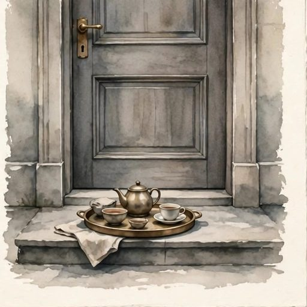
A tea tray left outside a closed door, the cup emptied, the saucer clean.
From time to time the house produces work in a hand that is unmistakably yours and that you cannot remember doing. A letter sent in a crisis, phrased better than you phrase things, signed with your name in your own script — and yet reading it now is like reading a competent stranger. A decision taken in an afternoon that the rest of you spent years catching up with. The signature is genuine. That is the unsettling part. The stranger inside does not forge your name; the stranger is one of its authorized holders, and has been signing, at need, all along.
This arrangement, once noticed, can look like a scandal or like a staff. The key desk files it under staffing. A large house cannot wait for its keeper to be present, awake, and composed before anything is signed; life presents documents at all hours, and somebody in a back office, calm and slightly unfamiliar, has always handled the urgent ones. The fluent stranger who rises in emergencies, who charms the room you dread, who writes the difficult page in a voice smoother than your everyday one — this is not an impostor in the house. It is one of its oldest employees.
The mature response is neither suspicion nor surrender, but something like collegial respect. You can even, in time, learn the stranger's hours and habits, leave the difficult correspondence on the desk where that hand will find it, and accept the signed results without demanding to have watched the signing. The name at the bottom was always a shared one. It was signed for the household, by the household, in one of the household's several perfectly legitimate hands, and the signature, on inspection, is excellent. The keeper files it under competence, and locks nothing afterwards.
68Someone Hums Behind That Door
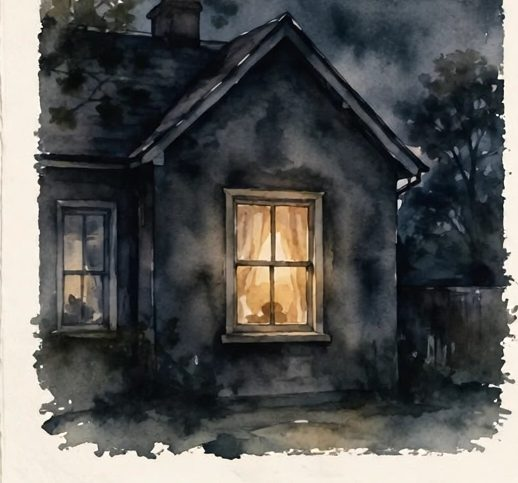
One window lit in a dark house at night, curtains open to the empty street.
Stand in the corridor long enough at the right hour and you may hear it: someone hums behind that door. It is not a tune you know. It is not quite a tune at all — four notes, a pause, the same four notes, the sound of someone entirely at home in a room you have never entered, occupying the evening without reference to your schedule. The humming stops when you knock, not guiltily, the way a kettle stops being listened to, and resumes later as if the interruption had been filed under weather.
Whoever hums there is not performing and is not hiding; the two states look similar from a corridor and are, in a house, opposites. Hiding is tense and monitors the door. This humming has the unselfconscious rhythm of a person who believes, correctly, that the room is theirs. The key desk is fond of this small sound and protects it in policy: the occupied rooms of the self are entitled to their evenings. A keeper who presses an ear to every door will end up knowing the house's acoustics and nothing about its life.
Better to let the humming be what it is — a sign of tenancy, low and contented. If the tune ever changes, note it in the ledger the way one notes a change in a neighbor's garden: with interest, without intervention. And if some evening you catch yourself, in an unguarded moment at the sink, humming four notes you cannot place, the house suggests you simply keep humming. The corridor between you and the stranger may be shorter, some nights, than the map insists. Four notes are not a message; they are simply a house, being lived in audibly.
69The Stranger Is Not an Enemy
It takes some keepers years to arrive at the plainest entry in this hall: the stranger is not an enemy. The unknown tenant has broken nothing, stolen nothing, sent no demands and filed no claims against the management. The worst that can be entered in the record is a certain independence — a life being lived in the back rooms according to customs the front of the house did not vote on. Unexplained is not the same as hostile, though the anxious imagination, left alone with a corridor, will happily forge the paperwork connecting them.
Consider the evidence as the key desk insists on considering all evidence: by its fruits. The stranger's tenancy coincides with resilience you cannot account for, with recoveries that began before you organized them, with the strange fact that the house has weathered seasons its keeper fully expected to be ruined by. An enemy does not usually keep the plants watered. Whoever lives behind that door has had a thousand unobserved chances to do harm and has instead, on the whole record available, done something closer to maintenance. The register knows of no cleaner testimony than a long record of harm not done.
None of this requires friendship, or even a meeting. It requires only the withdrawal of a suspicion that was never based on anything but unfamiliarity. Neighbors do not become threats by being unknown; they become neighbors by being lived alongside, season after season, without incident. The house recommends the formal step be taken in the ledger and then forgotten: tenant, back rooms — status: resident, not suspect. The corridor feels different after that entry is made. Quieter. Like a street where the curtains have stopped twitching, on both sides. The keeper makes the entry in pencil first, then, after a year, in ink.
70Nor an Oracle
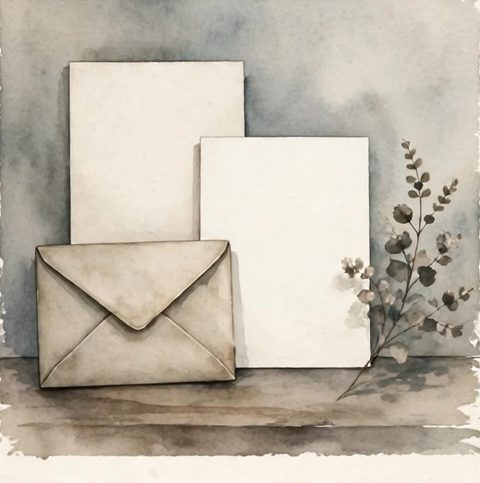
A blank card and an envelope on a table, a pen resting across them, unsealed.
The opposite error is just as common, and better dressed. Having made peace with the stranger inside, the keeper begins to consult the stranger — to treat the unknown tenant as an oracle, the back rooms as a shrine, every unexplained mood as a message in a bottle from the true management. Decisions get deferred down the corridor. The humming is analyzed. The light under the door is read like scripture, and the front of the house, which has actual work to do, waits for bulletins from a tenant who never applied to be anyone's prophet.
The key desk is firm on this point, kindly but firm: the stranger is not an oracle either. The parts of you that you do not understand are not wiser than the parts you do; they are simply less supervised. A hunch from the back rooms is a hunch, deserving the same cross-examination as any other witness — no more deference for arriving mysteriously, no less for arriving plain. Mystery is a property of your knowledge, not a rank in the household. The unknown is not the deep; sometimes it is only the unvisited, and it contains, alongside everything else, the broom cupboard.
Balance, then, is the whole art of this hall: neither enemy nor oracle, but resident. Give the stranger the courtesy owed to a long tenant — privacy, the benefit of the doubt, an occasional note — and withhold the worship owed to no one in the building, including yourself. The house runs best when every room is treated as a room: entered when invited, respected when closed, and never mistaken for the seat of a government higher than the whole. A room consulted too often forgets how to be a room at all.
71Leave a Note for the Stranger
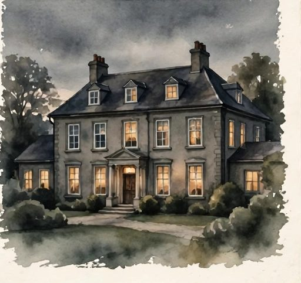
A large house at dusk, many windows dark, a few lit and steady.
There is a custom, in houses that have made peace with their back rooms, of leaving a note for the stranger. Not a summons, not a questionnaire — those have been tried by younger keepers and were answered, correctly, with silence. A note is a smaller instrument. It goes under the door or stays on the hall table, and it says approximately this: I know the room is occupied. I am not coming in. The house is glad of its tenants, and if anything is ever needed, the desk downstairs keeps reasonable hours and a fair stock of patience.
What would such a note accomplish? Possibly nothing, and the key desk is comfortable with that; not every act in a house is a mechanism. But something in the writing of it changes the writer. To address the unknown part of oneself without accusation and without flattery — to treat it, on paper, as a fellow resident with standing — is to retire the two old postures at once, the detective's and the devotee's. The note does not need an answer to have done its work. Its work was the tone, and the tone was set at the desk, by lamplight, in the keeper's own hand.
Some keepers leave the note annually, the way one leaves a card for a neighbor at the turning of the year. Some leave it once, in a hard season, and find that once was the whole correspondence. The house keeps no rule about frequency. It keeps only the draft, in the drawer of the key desk, for any keeper who wants the wording: short, courteous, and free of questions. Whatever lives behind that door has read stranger documents than this. Few of them, the keeper suspects, were as welcome. The keeper leaves the corridor lamp on, in case of a reply.
72The House Is Big Enough
The hall of strangers ends with the measurement that settles most of its anxieties: the house is big enough. Big enough for a keeper and a census of half-known tenants; big enough for rooms in daily use and rooms kept for reasons no one can still recite; big enough that an unexplained light, a humming behind a door, a signature in a familiar hand, are not crowding but company. Most of the dread in these corridors comes from an early survey — a small map, drawn young, that listed four rooms and called it the whole estate.
That first map was not a lie; it was a beginning. Houses grow by annexes nobody planned: a corridor added by a friendship, a wing thrown up by grief and later found, to everyone's surprise, to have the best light in the building. The self does the same, quietly, across decades, until the keeper's bunch of keys has more iron on it than the keeper can account for — which is not a scandal but a biography, told in metal. Every key on that ring is there because some year of your life needed a door.
So the hall closes its file without a single eviction. Let the tenants keep their rooms and their customs; let the keeper keep the rounds, the ledger, and the last word on nothing but the watering of the front hall plants. The strangers inside were never the mystery's problem. They are most of its hospitality — the proof, lit and humming and quietly at work, that a person is not a bedsit with one chair, but a house: larger than its map, and built to be lived in whole. There is room, the register concludes, and then room again behind it.
73Clues and Red Herrings
A small red fish resting on a ceramic plate, bright against the pale glaze.
Every case in the house's keeping begins the same way: with clues, and with the suspicion that some of them are lying. A clue is any small fact that seems to point — a taste that arrived from nowhere, a name that makes the room go quiet, a skill in the hands that no lesson explains. This hall takes up the evidence bag and turns it out on the table, herrings and all. For among the genuine articles, bright and misleading, swims the red herring: the fact that points confidently, dramatically, and wrong.
The detective stories promise that clues, properly gathered, arrange themselves into an answer. The key desk, having kept this house's files for years, reports a different order of things. Clues arrange themselves into a climate. They tell you what weather the house has lived in, which corridors flood, where the draughts come from — and they decline, politely and in unison, to name a culprit. A life examined closely yields not a solution but a richer description, and the wise investigator learns to want the description more than the verdict.
This hall, then, is a training in handling evidence without worshipping it. Each clue will be picked up, weighed, and set down again; some will be honored, some retired with thanks, and none will be promoted to the rank of final answer. The house has no final answers in stock. It has something better suited to a long tenancy: a good table, a strong lamp, and a keeper who has learned to say, of the most glittering clue on the cloth — interesting; let us see what else the bag contains.
74The Loudest Clue
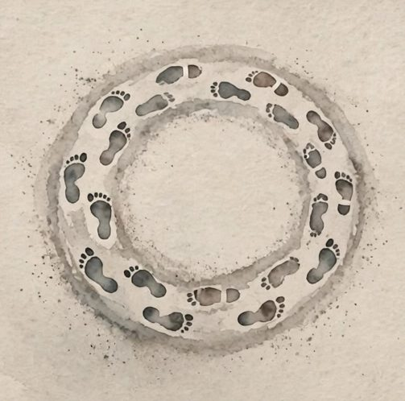
A trail of footprints in dust, circling back on itself across an empty floor.
In every file there is one clue that will not sit quietly in the evidence bag. It is the loudest clue: the memory that returns with drums, the incident every witness mentions first, the dramatic afternoon that seems to explain the whole subsequent biography in a single stroke. Investigators love it, because it photographs well. Biographers love it, because a life organized around one loud event can be told in an evening. And the key desk distrusts it on principle — not because it is false, but because volume is not a credential, in evidence any more than in music.
The loudest clue is usually real. That is what makes it dangerous. Something did happen; the grief was genuine, the triumph earned, the door really did slam in that particular year. The error is only in the promotion — in letting one true, loud fact govern the interpretation of ten thousand quiet ones. A house is not explained by its noisiest room. The corridors where nothing dramatic ever happened — the long ordinary stretches of adequate mornings — have shaped the keeper at least as much, and they keep no anniversaries and send no representatives to the inquiry.
The house's method with loud clues is neither dismissal nor coronation, but proportion. Enter the loud fact in the ledger at its true size, which is large, and then enter beside it, in the same ink, everything that happened at normal volume. Given a fair page, the loud clue usually settles into its proper office: a landmark, not a capital city. The map of a life has room for both, and the keeper who can hold them at scale has learned the first skill of the whole investigation — to hear the evidence at the volume it was actually spoken.
75A Red Herring, Respectfully Retired
Every long investigation accumulates at least one red herring — a clue followed in good faith, at real expense of hope and evenings, that turns out to lead nowhere but back to the table. The house has a procedure for these, and it is not the bonfire. The herring is respectfully retired: its file is closed with a note of the hours it held, the theory it supported, the keeper it kept company through a winter of not knowing. Then it is shelved with the other honored dead ends, of which any honest archive has a long and distinguished row.
The retirement matters because the alternative is bitterness, and bitterness is a poor filing system. A keeper who curses every false lead soon stops following leads at all; the bag stays shut, the table stays bare, and the house calls the resulting silence wisdom. It is not wisdom. It is a strike. The evidence of a life will always include herrings, because a life is not a puzzle designed by a fair author — it is weather, ancestry, accident, and appetite, mixed without a key to the mixture, and some of it glitters precisely because it means nothing.
So let the record show the house's respect for its retired herrings. Each one was, for a while, a way of paying attention; each taught the eye something about the water it swims in, even if the catch was nil. The investigator who can thank a false clue and set it gently on the shelf has understood something the stories leave out: the point was never only the answer. The point was the quality of the looking, and a herring, honestly followed, improves the looking as surely as a truth does.
The Key Desk
One desk receives all correspondence for this house — questions, corrections, keys returned, keys reported found, word of any door that opened or any room you finally sat in. It is read in the order it arrives.
76Coincidence Wears a Detective's Coat
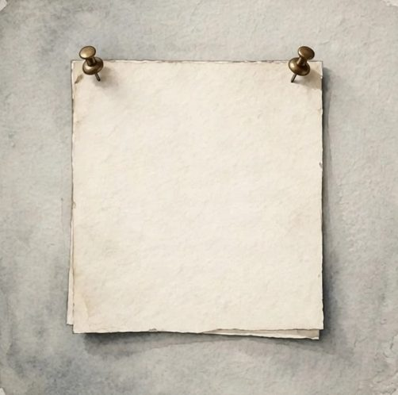
A blank map pinned to a wall, its corners lifting in a draught.
Of all the exhibits in the evidence bag, none arrives with more confidence than coincidence, and none deserves less. Two dates align; a stranger's name repeats; the song from the summer of the accident plays in the café on the morning of the decision. Coincidence pulls on a detective's coat — borrowed, a size too large — and begins directing the inquiry with enormous authority, pointing at patterns the way a conductor points at an orchestra it did not hire. The house listens politely. The house has heard the performance before.
The difficulty is that coincidence is not nothing; it is simply not evidence. It is the ordinary static of a large life, in which thousands of names, dates, and tunes are always in circulation, bound — by arithmetic alone — to collide picturesquely several times a year. A keeper who arrests every collision will fill the cells with innocent alignments and learn nothing, at great expense, about the house. Meanwhile the true clues, which are quiet and repetitive and unglamorous, wait in the bag like patient relations, unconsulted. Coincidence, flattered by attention, will happily wear the coat again tomorrow.
The key desk's rule is simple and has saved more files than any other in its keeping: coincidence may be enjoyed, but it may not testify. Enjoy it as one enjoys weather through a window — the pattern of rain on glass is beautiful, and it is not a letter. Then return to the evidence that can bear weight: what repeats, what is avoided, what the hands do unobserved. The detective's coat goes back on its hook by the door, where the house keeps all its costumes, labeled clearly, for the next performance.
77The Clue of What You Avoid
An old sealed envelope resting on a mantel, its flap still closed.
If the house keeps one clue more reliable than the rest, it is filed not under what a person loves, or says, or displays — but under what a person avoids. The avoided corridor tells the truth at walking pace. There is the topic that changes the subject itself, the room in every conversation that gets furnished with a joke and left; the task postponed for a decade with undiminished ingenuity; the name toward which the whole household's conversation bends, the way plants bend, away from a wall. Nobody arranges these avoidances. They arrange themselves, and their map is the floor plan of the house's real weather.
Handled carelessly, this clue becomes an accusation, and the key desk will not have it used that way. Avoidance is not guilt. People walk around things for excellent reasons — the floor is genuinely weak there, the season is wrong, the load they are already carrying has both arms full. A detour is information about the road, not a confession about the traveler. The keeper who notes an avoidance has learned where something matters, and nothing yet about what should be done, which is a second question and belongs to a slower hour.
The clue's real gift is cartographic. Draw the avoidances honestly and the map of a life gains a feature no inventory of enthusiasms can supply: its true contours, the shape made by all the walked-around things standing in a row. Keepers who have done this report a surprise — the map looks less like an indictment than like a garden plan, where the paths wind because something precious, or fragile, or simply not ready, is growing in the beds. Walk the paths. Note the beds. That is all the clue asks, and it asks it without raising its voice.
78The Clue of What You Repeat
The second great clue is the first one's mirror: not what the house walks around, but what it walks toward, again and again, across decades and changes of management. What you repeat is the biography your intentions keep failing to edit. The same argument in different kitchens; the same kind of friend chosen at twenty and at fifty; the same rescue offered, the same exit taken, the same small pleasure returned to like a step in a dance the feet learned before the mind was consulted. Repetition is the house's handwriting — the cursive it cannot disguise, because it never occurs to it to try.
It is tempting to file every repetition under failure, as if a life were a draft and the repeated sentence a proofreading error. The key desk's archive suggests a kinder taxonomy. Some repetitions are ruts, certainly — but some are refrains, and a refrain is not a mistake in a song; it is the song's way of remembering itself. The keeper who returns each autumn to the same sea town, the friend who telephones on the same date for forty years, is not stuck. They are keeping time. Before retiring a repetition, the house advises asking which kind it is, and the test is simple: a rut costs more each time; a refrain pays.
Even the ruts, examined without flinching, turn witness rather than defendant. A pattern repeated for years has been trying, in its clumsy way, to deliver a message about what the house needs and has not yet learned to order directly. Read it as mail, not as misconduct: slowly, in good light, with the suspicion that the sender — some committee of the back rooms, meeting at hours the keeper keeps missing — has been writing in good faith all along, in the only script it knows. The keeper underlines nothing; the repetition has underlined itself.
79Old Letters as Evidence
A brass compass resting against a blank horizon, its needle settled and still.
Old letters are the archive's most seductive evidence and its most treacherous, because they arrive with credentials: a date, a hand, the smell of the year they were written in. Here, in ink, is what you thought at twenty-three — the certainties set down like furniture, the affections declared in a script that has since changed its loops. The investigator opens the bundle with the feeling of approaching, at last, a primary source. The key desk, which has supervised many such openings, keeps a cloth on the table and its expectations under discipline.
For a letter is evidence of exactly one thing, and it is not the truth about a life. It is evidence of what one person, on one day, in one weather, could manage to say to one other person, within the customs of the time and the limits of the page. The omissions are not lies; they are the shape of the envelope. Whole wings of the house are missing from the correspondence, not because they were hidden, but because letters were not the rooms those wings were furnished for. The file must be read the way the witnesses were heard: gratefully, and in cross-section.
None of this demotes the letters; it promotes them to their actual office. Read as testimony rather than scripture, the old correspondence becomes the best company an investigation can keep — voices from the back rooms of former years, speaking in their own defense and nobody else's. Keep the bundle. Read it in winter. And when the young correspondent's confidence makes the present keeper smile, let the smile be fond: that hand, too, was signing the household's name, with the evidence it had, in the light there was. The file goes back in the drawer, heavier by one kindness.
80The Map Is Not the House
Two roads forking in grey mist, neither signposted, both well kept.
Every keeper, sooner or later, commissions a map: the chart of the house as currently understood, corridors inked, tenants labeled, the mystery reduced to a legend in the corner. The map is useful. It is also, the key desk insists on recording, not the house. The house has weather the map has no symbol for. It has the smell of the stairs in November, the exact acoustics of the humming room, the way the light at four o'clock makes the plainest corridor briefly beautiful. A map can hold a floor plan. It cannot hold a tenancy, and a life is mostly tenancy.
The error is never in drawing the map; it is in moving into it. Keepers who confuse the two begin to live at the scale of the legend — their self-knowledge tidy, portable, and quietly false, like a traveler's tale of a country visited only in the airport. The house tolerates its maps the way it tolerates its mirrors: as instruments, consulted briefly, in passing, by someone on the way somewhere real. The moment a map starts giving orders the corridor disagrees with, the corridor is right, and the map goes back to the desk for revision at the keeper's convenience.
So this hall of clues closes with its instruments laid in a row: the loud one at its true size, the herring honored on its shelf, coincidence enjoyed and never sworn in, the avoidances and repetitions charted like coastlines, the letters read as voices. And above the table, pinned crooked and due for redrawing any year now, the partial map of the house — useful, unfinished, and loved best when its edges fade honestly into blank. Beyond the ink, in every direction, the house itself goes on: larger, quieter, and entirely unbothered by being imperfectly known.
81What the Neighbors Noticed
The neighbors, it turns out, have been keeping notes the keeper never asked them to keep. Not written notes, and not unkind ones: the kind stored in the ordinary memory of people who share a fence line — when the garden gate is left swinging, when the piano goes quiet for a season, when the lights change their hours. They noticed the year the house grew a vegetable patch and the year it stopped bothering. None of this reaches the house as a report at the time. It arrives later, casually, over the fence, dropped into a conversation about weather, and the keeper files it under evidence without ceremony.
Their testimony has a peculiar value precisely because it was never meant for the file. The neighbors were not studying the house; they were simply living beside it, and what people absorb without effort is often the part that escapes deliberate records. They noticed the comings-out in the morning before you noticed your own habits had changed. They heard the arguing year and the laughing year through walls you assumed were thicker. The keeper neither resents this surveillance nor romanticizes it. It is what any house accumulates simply by standing among other houses: a version of itself, held in friendly custody, that its own rooms cannot check.
You may, if you like, ask them what they noticed, and the keeper recommends it occasionally, with the understanding that their answers are evidence and not verdicts. The neighbors saw the front of the house in all weathers; they did not see the back rooms, and they will tell you the color of the door as if it were the temperament of the building. Take the notes gratefully and file them where such notes belong: beside the photographs and the old letters, labeled plainly — seen from outside, true as far as it goes, and kind enough to be worth keeping in the drawer.
82A Clue That Took Twenty Years
A lantern lighting only a small circle, the rest of the path in darkness.
Some clues are slow on purpose, or seem to be. A remark made by a grandmother in a kitchen, filed away unexamined because the listener was fourteen and the remark meant nothing then, sits in the register for twenty years and then, on an ordinary evening, opens itself. Nothing about it has changed. The words are the same words. What changed is the reader: twenty years of living supplied the context the fourteen-year-old lacked, and the clue, patient as a seed in a drawer, turned out to have been addressed to the older person all along.
The keeper does not call such clues late. Latency, in this house, is a property of evidence, not a failure of it. A key cut in one decade may wait for a lock installed in another; a sentence overheard in childhood may be addressed to a grief that has not happened yet. The register therefore keeps even the opaque entries, the ones no current reader can interpret, on the principle that incomprehension is not the same as worthlessness. What cannot be read today is not discarded today. It is shelved, in decent order, for the reader the house is quietly becoming.
There is a corollary the keeper states gently, because it steadies people who fear they have missed their chance to understand something. If a clue can take twenty years to ripen, then not understanding it yet is not a verdict on your attention. You may simply be early. The file does not close on your schedule, and it does not close against you. Keep the remark. Keep the photograph, the letter, the half-remembered afternoon. Somewhere ahead of you is a version of the reader who will know exactly what it was doing in the drawer all that time.
83Not Every Pattern Is a Message
A doorway seen from inside, a welcome mat lying beyond it.
The mind is a pattern-making instrument, and a good one, which is exactly why it must be supervised at the door of the evidence room. Given three coincidences and a quiet evening, it will produce a design complete with meaning, motive, and a moral. Some of those designs are true. Many are wallpaper: pretty, repeatable, and pasted over a wall that was never saying anything at all. The keeper's rule is not to stop seeing patterns; it is to hold them the way one holds a suspect sketch — interesting, possibly someone, and no grounds yet for an arrest.
A pattern earns its keep by surviving plain questions. Does it hold when the dates are checked. Does it explain the uninteresting cases as well as the vivid ones. Does it remain standing when a simpler account is offered — tiredness, habit, the ordinary weather of a life. Patterns that pass these tests graduate from decoration to evidence, and the register enters them in better ink. Patterns that fail are not mocked or mourned; they are retired to the same shelf as the red herrings, with the house's thanks for the entertainment and a note that resemblance is not the same as relationship.
This discipline protects something tender, and the keeper names it plainly: the right to have an ordinary explanation. Not every recurring sorrow is a coded letter from the past, and not every repeated choice is a signature. Sometimes the pattern is that the winters are long and the house is cold in February, and the person is sad in February, and that is the whole file. A house that insists on messages everywhere becomes uninhabitable, lit by significance at all hours. The keeper prefers a house where meaning is welcomed when it knocks and not manufactured when the evening is quiet.
84The Evidence Points Home
After all the corridors of this hall — the loud clues and the quiet ones, the herrings retired and the patterns cross-examined — the evidence, taken together, points somewhere unglamorous. It points home. Not to a buried room, not to a stranger behind a door, but to the ordinary address where the person has been living all along: their habits, their weather, the rooms they actually use, the keys actually on the ring. The keeper has watched many investigations travel far and wide in search of an exotic explanation and return, footsore and wiser, to the front step they started from.
This is not a disappointment, though it is often received as one. Home evidence is not lesser evidence; it is simply evidence that cannot be dramatized. The pattern of what a person chooses on unremarkable Tuesdays says more, in the register's long experience, than the pattern of what they did once in a crisis. The mystery was never hiding in a distant wing. It was distributed through the whole house, in plain sight, in the way the light falls differently in every room and no single window shows the whole garden. Pointing home means the search changes its posture, not that it ends.
So the hall of clues closes with the keeper's favorite entry, the one written after the longest files. The investigation of a self does not conclude with a culprit produced in the library. It concludes, again and again, with the detective setting down the magnifying glass in their own kitchen, making tea in their own chipped cup, and understanding that the house under investigation is the house that has sheltered the investigator through every mile of the search. The evidence points home. The keeper underlines it once, in pencil, the way one marks a sentence meant to be found again later.
85Living With the Unsolved
A kettle on a stove in a room of bare beams, steam rising.
This hall is about the long tenancy: not the investigation, but the living that goes on while the file stays open. A house can be thoroughly inhabited with questions pending in half its rooms. Meals get cooked in it. Guests are received in it, and laugh in it, and leave coats in its hall. The unsolved parts do not pause the solved parts, and nobody sensible waits for a complete self before setting the table. The keeper's first observation in this hall is simply that: the unsolved is a condition of the house, not a suspension of its life.
Living with the unsolved asks for a particular household skill, and it is learnable the way all household skills are: by doing it badly, then less badly, over years. The skill is holding a question without gripping it. A gripped question bruises the hand and answers nothing; it follows its holder from room to room demanding attention like a debt collector with a key. A held question, by contrast, sits where it is put — on the mantel, in the file, by the door — available for consideration and equally available to be walked past on the way to breakfast.
Nothing in this hall is resignation wearing a nicer coat. The keeper is explicit on the point, because the two are often confused from the doorway. Resignation locks the unanswered rooms and pockets the key; living with the unsolved keeps the rooms in the rounds — dusted occasionally, aired in spring, revisited when curiosity genuinely knocks. The questions remain questions, and the house remains open. What changes is only the terms of the tenancy: the mystery stops being treated as a squatter to be evicted and is entered, at last, on the register as a permanent and peaceable resident.
86Making Tea in an Unfinished House
A mantel clock beside a small framed card left blank.
The kettle does not ask whether the house is finished. It asks for water, a flame, and ten unhurried minutes, and it provides, in return, the oldest technology the house owns for thinking: something warm to hold while the mind does its rounds. Making tea in an unfinished house is not a metaphor the keeper invented; it is the daily practice by which the house proves to itself that unfinished and unlivable are different words. The plaster may be bare in one corridor. The tea is still hot, and it is still tea.
Visitors sometimes apologize for the house on its behalf — the scaffolding in the back corridor, the room where the map simply stops. The keeper has learned to stop them kindly. A house under gentle, permanent renovation is not a house failing to be finished; it is a house whose owner is still alive in it, still moving a wall a hand's breadth, still deciding. The only truly finished houses are the ones nobody lives in anymore. Everyone else is mid-sentence, and the tea, which never pretends otherwise, is the correct refreshment for the condition.
So the keeper's rounds in this hall begin, more often than not, in the kitchen. Before the file is opened, before the unanswered rooms are visited, the kettle goes on. It is a small declaration of order: whatever the day's investigation finds, the household runs. Cups are washed. The clock on the mantel keeps its own counsel and its own time. And a person who can make tea in an unfinished house — unhurried, unembarrassed, setting out two cups when a neighbor might knock — has understood the hall's whole argument before reading a word of it.
87The Question Kept on the Mantel
Every house in this register keeps at least one question on the mantel: the question that has been asked so long it has become furniture. Why did I choose that road. What would the other life have held. Where did that version of me go, the one who was going to be a sailor, a singer, a stranger in another city. The question sits between the clock and the candlesticks, in the place of honor and of daily passing, and the house walks by it a dozen times a day without flinching.
A mantel is a considered choice of storage. The mantel is not the attic, where questions go to be forgotten, and not the desk, where they go to be worked on. It is the shelf of things kept in sight without being kept in hand. A question on the mantel is neither solved nor suppressed; it is displayed, the way a family displays a photograph of someone who no longer visits. It acknowledges, daily and without speeches, that this question is part of the household's history and will be looked at, in passing, for as long as the house stands.
Once in a while — not often, and never on schedule — the keeper takes the question down and holds it to the light. Sometimes it has changed in the keeping: edges worn, urgency gone, a smaller and kinder question inside the old one's coat. Sometimes it has not changed at all, and it goes back up unchanged, and that is also a finding. Then the mantel is dusted, the clock is wound, and the house resumes its day. The question has not been answered. It has been kept, which the register counts as a different and entirely respectable achievement.
88Unanswered Is Not Unlived
A partial map of a house, its far rooms fading to blank.
The confusion this room exists to correct is a quiet and expensive one: the belief that a life with unanswered questions in it is a life somehow still in the waiting room, not yet begun. The register flatly disputes the arithmetic. The years spent not knowing why, or who, or what next, were not a corridor outside the life. They were rooms in it, fully furnished with weather and work and love and Tuesdays. A person does not live after the answer arrives. A person lives, and answers arrive or do not, in the middle of the living.
Consider the evidence the other way round. The houses that waited for certainty before living in themselves are, in the keeper's rounds, the saddest entries in the register: curtains drawn for decades against a knocking that turned out to be the postman of ordinary life. Meanwhile the supposedly unfinished households — questions outstanding, maps incomplete, one wing frankly mysterious — raised children in them, buried their dead from them, danced in their kitchens. If unlived means anything, it cannot mean that. The unlived life is not the unanswered one. It is the postponed one, and postponement is a choice, not a sentence.
So the register enters the correction in its plainest hand, for whoever finds this room in a season of waiting. The unanswered parts of a life are not gaps in the life. They are load-bearing unknowns, and the house stands on them exactly as it stands on the known. Years from now, some of the questions will have been answered so gradually that nobody noticed them closing; some will be standing on the mantel still, grey at the edges, entirely at home. Either way, the life will have been lived in full — because it was, in every unanswered year of it.
89Curiosity Without a Deadline
A rocking chair by a window in soft grey light.
Deadlines are excellent servants of many things — trains, taxes, soup — and curiosity is not one of them. Curiosity under a deadline becomes an interrogation, and interrogation is a poor way to learn anything about a house that opens only at its own pace. The keeper has watched questions wither under time pressure and the same questions, asked again in a rocking chair with nowhere to be, unfold for an hour like a cat in a patch of sun. Nothing was forced. The difference was never the cleverness of the asking. It was the absence of a clock standing over it.
This is why the house keeps its inquiry on the rhythm of the seasons rather than the rhythm of the courtroom. A question visited four times a year, briefly and without agenda, accumulates more truth than a question besieged nightly for a month. Besieged questions learn to give any answer that will end the siege; the register is full of confessions extracted at midnight that dissolved by breakfast. The seasonal question, by contrast, is under no pressure to perform. It can say, honestly, not yet, or still dark in that corner, and be believed, and be left in peace until spring.
The keeper admits this policy tries the patience of visitors, who arrive at the desk wanting the whole house explained by Thursday. It cannot be. What can be offered by Thursday is hospitality: a chair, a cup, a walk past the doors that open easily, and the honest news that the rest opens on a longer lease. Most visitors, given the chair and the cup, find their deadline quietly renegotiating itself. Curiosity without a deadline is not curiosity abandoned. It is curiosity trusted with the keys to its own timetable, and it has never once, in the register's memory, abused the trust.
90The Comfort of Partial Maps
No map of this house has ever been complete, and the keeper has stopped apologizing for the fact, because the partial map has virtues the complete one could not offer even if it existed. A partial map is honest about its edges. It shows the surveyed rooms in good ink, the guessed rooms in pencil, and the rest in clean blank paper that admits, without drama, that nobody has been there yet. It can be carried in a pocket. It can be corrected in the margin on the stairs. It does not pretend the expedition is over.
The comfort is specific, and the keeper will name it: a partial map lets you navigate the known house with confidence instead of treating the whole building as suspect. Because the blank is marked blank, the drawn is trustworthy. You can find the kitchen in the dark. You can give a guest directions that hold. The unexplored wing casts no shadow over the explored rooms, because the map has already made the distinction the anxious mind refuses to make on its own: between what is unknown and what is, therefore, unreliable. The two have never been the same thing.
Maps, in any case, are made by walking, and the walking continues. Every decade adds a corridor the previous survey missed; every honest witness corrects a wall. The register keeps the old maps too, rolled in a drawer, not as errors but as portraits of the house at earlier stages of being known — smaller, wronger, and drawn with complete sincerity by keepers doing their best. There is comfort in that drawer. It proves the map has always been partial, and the house has always been fine, and the two facts have never once been in conflict.
The Key Desk
One desk receives all correspondence for this house — questions, corrections, keys returned, keys reported found, word of any door that opened or any room you finally sat in. It is read in the order it arrives.
91Ask Again in Ten Years
One empty hook on a wall, beside hooks holding keys.
Some questions keep office hours measured in decades, and the house has learned to stop apologizing for their schedule. Ask again in ten years is not a dismissal; it is an appointment, made in good faith, with a reader who does not exist yet. The keeper enters it in the register the way one enters any serious engagement: without irony, and with every intention of keeping it. What cannot be answered by the present tenant may be perfectly legible to the tenant of ten years hence, who will arrive at the page with evidence the present one cannot imagine.
This is not procrastination dressed in patience's clothing, and the keeper can tell the difference at a glance. Procrastination hopes the question will die of neglect and is quietly relieved at every postponement. The ten-year appointment hopes the opposite: that the question will still be standing, in good health, when its reader is ready, and that the reader will have grown the exact faculties the question requires. One is a door being avoided. The other is a door being approached at the speed the corridor actually allows, which is sometimes the speed of a life.
The empty hook on the wall is this room's emblem. It is not a failure of inventory; it is a place kept. Somewhere, in a decade or so, a key will come into the house that belongs on it, or the hook will be found to have been waiting for a key already carried and never matched. Until then the hook holds its shape against the plaster, patient and unembarrassed, and the rounds pass it nightly without a flicker of apology. Ask again in ten years. The house will be here. So, in all likelihood, will the question. So will you.
92The Mystery Is Not a Debt
Fruit ripening on a sunny windowsill, unhurried.
A debt has a creditor, a sum, and a date, and the mystery of a self has none of the three — which is why the keeper strikes the word from the house's vocabulary wherever it appears. Nobody is owed an explanation of you. Not your family, however loving; not your past, however loud; not the version of yourself you once announced at a podium or a kitchen table. The unanswered questions in the file are not arrears. Nothing is compounding. No bailiff of the soul will call, because there is no contract, and there never was.
And yet the feeling of owing arrives in most houses eventually, usually carried in by comparison. Someone else's house seems fully mapped, its owner fluent in every corridor, and beside that fluency your own partial map looks like delinquency. The register has inspected those fluent houses for decades and reports the finding without pleasure: the fluency is a front room, well lit and well rehearsed. Behind it lie the same unopened doors as everywhere else. The difference between houses is rarely knowledge. It is the honesty of the map, and whether the owner has been billed for the blank parts.
What curiosity remains, once the debt is cancelled, turns out to be the genuine article. Freed from obligation, the questions on the mantel can be visited the way fruit on a windowsill is visited — to see how they are ripening, not to demand they be ready. Some will be taken up with real appetite; some will be left, and leaving them will cost nothing. The mystery, relieved of its false ledger, shrinks to its true size: not a sum owed to anyone, but a property of the house — like its acoustics, like its light — to be lived with and occasionally enjoyed.
93Ordinary Days in an Unsolved House
Most days in an unsolved house are not about the unsolved. They are about the boiler and the shopping, the letter that wants answering, the neighbor's ladder borrowed and returned, the soup. This is not the mystery failing to be profound; it is the mystery in its natural habitat, which is ordinary life, unphotographed. The keeper distrusts accounts of selfhood that leave out the Tuesdays, because Tuesdays are where a self actually resides — not in the great confrontations, but in the thousand small transactions by which a person, unsolved and all, keeps a household standing.
There is a temptation, in houses that take their questions seriously, to treat ordinary days as the intervals between the real work. The register corrects this as firmly as anything it corrects. The ordinary day is not the interval. It is the text. The way a person makes breakfast in an unanswered season, answers the door, loses patience and retrieves it, tends a plant in a room they cannot explain — that is not preamble to the mystery. That is the evidence, arriving in its largest quantities, wearing its plainest clothes, asking only to be noticed at its true weight.
By evening the unsolved house looks like any house: dishes done or defiantly not done, lights going off in their usual order, the keys where the keys live. Nothing has been concluded, and everything has been conducted. The keeper, finishing the rounds, sometimes pauses at the ordinariness of it with something close to respect. A mystery that can survive being lived among, daily and without ceremony, is not a lesser mystery. It is a domesticated one, in the honorable sense: a wild thing that has agreed to share the house, and keeps its side of the agreement.
94Letting a Question Ripen
A calm wide house under an overcast sky, its windows unhurried.
Fruit picked green teaches nothing except the picker's impatience. A question picked green is much the same: hard, sour, and likely to be mistaken for the thing itself, when it is only the thing's early and inedible form. The keeper's practice is to leave such questions on the branch — in the sun of ordinary days, in the weather of new experience — and to check them the way one checks fruit, by walking past with attention, not by pulling. Ripening is not idleness. It is a process with its own schedule, and it cannot be hurried by being watched.
What ripens a question is rarely more questioning. It is living. A year of work ripens the question of what work is for. A friendship kept through one hard winter ripens the question of what one is to other people. A loss, survived, ripens questions that decades of speculation left green, and does it without asking permission. This is why the keeper schedules so little of the investigation directly. The house's real laboratory is its calendar. The file advanced more by three ordinary years than by any single season of deliberate searching the register can name.
And some questions, left long enough on the branch, do something better than ripen: they drop, of their own weight, into irrelevance, and are found one morning to have been compost all along. The keeper does not grieve them. A question that living has quietly answered by outgrowing is not a failure of the file; it is the file working exactly as files should. What remains on the branch at any season is what genuinely remains to be known — fewer questions than the young house feared, and every one of them, at last, worth the patience.
95The House Does Not Apologize for Its Size
A ring of keys resting on a saucer beside a lamp.
Visitors, meaning well, sometimes offer the house a smaller description of itself: surely the essentials could fit in fewer rooms; surely a person could be summarized, given a tidy afternoon. The house declines the offer, politely and entirely. It does not apologize for its size. It did not choose its architecture to impress or to inconvenience; it grew, room by room, out of a life being lived at full scale, and every corridor in it corresponds to something that actually happened. A house this size is not an indulgence. It is a record.
Apology, in any case, would be a category error, like apologizing for the weather inside one's own climate. The house is not large because its owner is hiding something in the extra rooms; it is large because a human life, examined at the resolution of days, contains more weather than any summary can hold. The unvisited wings are not evidence of evasion. They are evidence of scale — the ordinary, unglamorous scale of a creature that has been, at various times and sometimes simultaneously, brave and cowardly, constant and fickle, known and strange to itself, and has kept the receipts in rooms.
So the keeper's rounds are long, and the keeper does not begrudge them. A small house can be known by Thursday; this one takes a lifetime, and the register regards that not as the house's defect but as its dignity. Guests who stay long enough stop asking for the summary and start asking for the tour, one room at a time, at walking pace. That is the only terms on which the house is ever known — partially, warmly, and without apology — and the keeper, setting the keys down at midnight, finds the terms entirely satisfactory.
96Tonight, the Keys Rest
Every investigation in this house, however long its day, ends the same way: with the keys set down. Not surrendered, not solved — set down, on the hall table, in the saucer kept there for the purpose, where they will lie in a small bright heap until morning. Tonight, the keys rest. The keeper insists on the ceremony because a house that never stands down from its own questions becomes a courthouse, and nobody can sleep in a courthouse. Rest is not the abandonment of the inquiry. It is the inquiry's maintenance, done in the dark.
There is a trust exercised in this room that the daylight rooms rarely manage. To set the keys down is to believe that the house will keep its questions safe overnight without a guard — that no answer will escape, no door will seal itself forever, no clue will spoil by morning. They never have. The register's night entries are almost comically uneventful: the house at rest is simply the house, minus the interrogation lamp. Whatever the morning brings, it will bring to a keeper who slept, and a slept keeper reads evidence better than a vigil ever did.
So the hall of living with the unsolved closes at nightfall, deliberately, the way the house itself prefers. The mantel question keeps its place. The ripening questions keep the branch. The partial map lies folded on the chair, its blanks unalarmed. And the keys, which have opened what they opened and declined what they declined, cool slowly in their saucer like tools after work. Tomorrow the rounds resume. Tonight nothing is required of anyone — not of the house, not of its keeper, not of the mystery, which rests too, and is, in the register's last entry of the day, welcome to.
97Step One: Take the Keys Off the Hook
An empty wall hook, the bunch of keys resting on a table below.
The first step is the smallest ceremony in the house, and the hall gives it a whole room because everything else depends on its spirit being right. Taking the keys off the hook is not the start of a search. It is the decision to walk the house as its keeper rather than its defendant — to hold the means of entry in your own hand, at walking pace, without an agenda for what must be found. The hook has held the keys all night, all year, through every season of not wanting to know. The hand that lifts them now is not braver than yesterday's. It is simply ready to make the rounds.
Feel the weight of them first; the step asks that much attention and no more. A bunch of keys is heavier than it looks, and its weight is information: these are real doors, real years, real errands of the self, carried daily and rarely considered. Some of the keys will be familiar to the touch. One or two will feel strange, as if borrowed from another house entirely. That strangeness is not a problem to be solved in this room. It is simply registered, the way a keeper registers weather — noted, and carried along on the round.
What quietly changes, once the keys are in hand, is the posture of the whole inquiry. A person still seated, waiting for the house to explain itself, is in one kind of relationship with the mystery; a person standing in the hall with the keys warm in their palm is in another. Nothing has been unlocked. Nothing has even been tried. But the rounds are now possible in a way they were not while the keys hung untouched, and possibility, the register notes, is the true first finding of every honest investigation — the discovery that the house can be walked at all.
98Step Two: Label One Key, Honestly
A key with a small blank paper label tied to it with string.
Not all the keys. One. The step is sized with a mercy in it, because a whole ring labeled in a single sitting would be labeled in a single mood, and moods are poor archivists. One key, chosen almost at random, examined in good light: what does this one actually open. Not what it was supposed to open when it was cut, not what the family always said it opened, but what it has opened lately, in practice, in the living of the days. The honestly in the step is not decoration. It is the entire instruction, wearing one word.
The label that results is usually less grand than the key deserved and more useful than the legend it replaces. Kitchen, it may turn out, not courage. Or the other way round: a small brass key carried for decades as an errand key proves, on inspection, to be the one that opens the room where the person is funniest, or tenderest, or most entirely themselves. The register does not mind which way the correction runs. It minds only that the tag, this once, tells the truth as far as the truth is currently known, in pencil, in the keeper's own hand.
One honest label changes the ring out of proportion to its size. The other keys, still blank-tagged, are no longer quite so blank: the hand now knows the difference between a labeled key and an assumed one, and the difference itches, pleasantly, for years. That itch is the step's real product. Not a system of labels — the house resists systems the way it resists deadlines — but a standard, set once and remembered: that a key may be named for what it does rather than what it was called, and that the naming, done honestly, is a form of respect.
99Step Three: Try One Door Without Force
The third step brings the keeper to an actual door — one door, again; the hall is consistent in its sizing — and asks for the lightest possible experiment. Try it. Not with the shoulder, not with the whole biography leaned against it, not with the accumulated grievance of every year it stayed shut. With a hand, once, at ordinary pressure, the way one tries a door in a friend's house: prepared for either answer. The step is a room about pressure, because most of what this house knows about locked doors it learned from doors that were only ever tried hard.
Forced doors teach the house the wrong lessons, and the register has the splintered evidence to prove it. A door forced either breaks — and then nothing it guarded is private ever again — or holds, and is thereafter recorded as unopenable, when all that was ever established is that it resists force. Some of this house's doors open only to the unhurried hand for the same reason some people answer only the unhurried question: the mechanism is not secrecy but dignity, and dignity does not respond to being rammed. The step simply aligns the method with the material.
And if the door does not open — which, the keeper notes in the margin, is the outcome in a respectable share of honest trials — the step has still done its work. A door tried gently and found locked is now known to be locked, cleanly, without damage to door, frame, or keeper. It can be left in peace, its lock respected, its room unguessed at for a while. That is a finding. The register enters it without disappointment, in the same ink as the openings: tried once, without force; holding; to be revisited in another season, by a keeper who knocked properly.
100Step Four: Oil One Hinge
A door handle turned, the door slightly open in its frame.
Not the lock. The hinge. The fourth step is the hall's small masterpiece of misdirection, because nearly everyone who tends this house tends the dramatic parts — the locks, the keys, the sealed doors — while the hinges, which do the actual daily work of every opening, go dry for decades. A hinge is where a door's willingness lives. It does not decide whether the door may open; it decides whether opening is easy or a quarrel. Oil one hinge, the step says, and notice how much of the house's resistance was never opposition at all. It was friction.
In the keeper's idiom, a dry hinge is any small, repeated unpleasantness that has attached itself to an otherwise open door: the flinch before the family call, the grit in the morning routine, the tiny dread that makes a person avoid a room they are perfectly allowed to enter. None of these are locks. All of them tax every passage, daily, until the taxed passage starts to look like a closed one. The register's files are full of doors recorded as shut for years that opened, after one oiling, with the ease of a door that had been waiting to be asked properly.
What changes, after the oiling, is out of all proportion to the act, which took ninety seconds and one drop. The door swings now where it used to drag, and the keeper passing through it twice a day saves, each time, the small expenditure of bracing — and it was the bracing, compounded over years, that had been mistaken for the door's character. The step therefore ends with the register's driest marginal note: before concluding that a part of the house is closed to you, check whether it is merely dry. Maintenance is not insight. It is what makes insight usable.
101Step Five: Leave One Door Ajar on Purpose
A small oil can standing beside a door hinge.
A door ajar on purpose is a different object from a door ajar by accident, and this step exists to make the distinction deliberate. The accidental gap is carelessness; the chosen one is policy. It says: this room and the corridor are in conversation now; whatever is in there may drift out, and whatever is out here may drift in, and both drifts are permitted. The keeper chooses the door the way one chooses which window to open in spring — not the most dramatic one, just one whose room has been sealed against its own air for long enough.
What the step quietly changes is the house's ventilation, in every sense the metaphor allows. Sealed rooms develop their own weather, stale and self-confirming: the same air, the same conclusion, breathed for years. A door left ajar on purpose admits the corridor's ordinary air — the day's news, other rooms' music, the simple fact of the rest of the house — and lets the sealed room's air out to be diluted by the whole. Nothing is exposed. Nothing is toured. The room keeps its privacy and loses only its stagnation, which, the register notes, it never wanted.
There will be a temptation, by evening, to go and check what the ajar door has accomplished, and the step's discipline is to resist it. A door left open on purpose is not an experiment under observation; it is a standing invitation, and invitations are not audited nightly. Weeks later, the keeper may notice the room smells of the corridor now, or that a thought from that room has begun appearing, unforced, in the day's ordinary thinking. Or nothing may be noticed at all. The door stays ajar either way. That is what on purpose means.
102Step Six: Ask One Witness One Question
Other people's testimony about this house has been arriving all along, unsolicited and unfiled — the neighbors over the fence, the friend at the kitchen table, the sibling with total recall. The sixth step makes one deliberate addition to that weather: one witness, chosen on purpose, asked one question, on purpose. Not a survey. Not an intervention staged as a dinner. One question, of the kind that can actually be answered from where the witness stands: what did the house look like from your side of the fence, in the year everyone calls the hard year.
The discipline of the step lies in what happens after the asking, which is: nothing. No rebuttal, however gentle. No correcting the witness's dates, no supplying the context that would make the testimony more flattering, no explaining what was really going on inside. The witness saw what the witness saw, from a real vantage, in real weather, and the answer is received the way evidence is received in the earlier halls — gratefully, carefully, and into the file rather than into an argument. A witness who feels cross-examined becomes, by the second question, a defense attorney. The step permits one question precisely to prevent that.
What changes is rarely the headline the keeper expected. The witness's answer usually concerns some small, lit detail the house had never thought to record — the way the porch light was always on that winter, the laughing audible through a wall in a year the house remembers as silent. Entered in the file, such details do not overturn the case. They do something quieter and more durable: they prove the house was also happening, all along, in other people's keeping — and that its story, however privately investigated, was never a solo performance.
103Step Seven: Write Down One Clue, Plainly
A door ajar, warm light widening through the gap.
The seventh step moves one clue from the atmosphere into the archive. Every house carries dozens of clues in suspension — impressions, suspicions, recurring half-thoughts that arrive in the shower and evaporate by breakfast. Suspension is where clues go to stay immortal and useless. Written down, a clue becomes mortal: it can be checked, dated, compared, and — the keeper insists this is a kindness — eventually discarded. The step asks for one clue, the one currently loudest in the corridor, transferred to paper before it completes another lap around the house's attention.
Plainly is the step's operative word, and it is stricter than it sounds. Plain writing strips a clue of its costume. Not the door was surely hiding something, but: I avoid the study in the evenings. Not a pattern of avoidance suggesting unresolved material, but: three birthdays, three headaches. The register's experience is that most clues, written plainly, shrink to their true size on the page — some to almost nothing, some to a plain fact that has been waiting years for someone to state it without embroidery. Either result is progress. Embroidery is how clues stay legendary instead of becoming evidence.
The written clue is then filed, not framed. This matters. A framed clue governs the house; a filed clue serves it, available for the day a second, matching observation arrives and the two can be laid side by side like photographs. The keeper has watched single written clues sit quietly in the file for years and then, joined by one more, suddenly constitute a finding. And has watched others sit just as quietly and constitute, in the end, only themselves — one odd evening, honestly recorded. The file honors both outcomes equally. That is what makes it a file, and not a theory.
104Step Eight: Retire One Red Herring
Two chairs and a small table, set for a conversation.
Every long investigation accumulates at least one magnificent false lead — the clue that explained everything, beautifully, and was wrong. The eighth step chooses one such herring and retires it, with ceremony proportionate to its service. Retiring is not debunking. The herring is not dragged through the house as a fraud; it is thanked, formally, for the years of structure it provided, and then removed from the active file to the shelf where retired explanations live, in honorable order, available for reminiscence and no longer for duty. The keeper signs the retirement in the register, in ink.
The difficulty of this step is never intellectual. Everyone in the house has known for years that the herring was a herring; the evidence turned long ago. The difficulty is loyalty. A false explanation that organized a decade becomes load-bearing in the story a person tells at dinners, and removing it feels, at first, like removing a wall. The register's counsel is architectural: check what the wall actually carries. In nearly every case it carries only itself — the story stands fine, slightly draughtier, noticeably more honest, and the room it guarded turns out to be usable.
What quietly changes, once one herring is honorably retired, is the morale of the whole investigation. If this one — the favorite, the beautiful one — can be let go without the house falling, then no explanation in the file is a hostage situation anymore. The others loosen in their frames. The keeper begins to hold all of them the way evidence deserves to be held: firmly enough to use, lightly enough to release. And the shelf of retirees, growing slowly along the corridor wall, becomes the house's most reassuring exhibit: proof that being wrong, here, is survivable and even, in time, decorative.
105Step Nine: Sit in One Unvisited Room
The ninth step is the quietest in the hall and, by the register's private ranking, the bravest — though nothing about it looks like bravery. It asks the keeper to enter one unvisited room, sit down in it, and stay a while. Not to search it. Not to inventory, renovate, or explain it. To sit, the way one sits in any room of one's own house: as a resident, not an inspector. The room has been on the other side of its door for years, accumulating whatever unvisited rooms accumulate. The step proposes a visit without an agenda, which is the only kind some rooms accept.
Unvisited rooms are rarely as dramatic as their reputations. The corridor gossip — supplied, as corridor gossip always is, by imagination — promises either treasure or trouble, something that will explain everything or ruin everything. What the sitting keeper usually finds is more ordinary and more moving: a room like other rooms, dusty at the edges, holding some furniture of the self that went out of fashion, some season's abandoned project, a view from the window that turns out to be rather good. The extraordinary thing, most visits, is that nothing extraordinary was being kept. The door was heavier than the room.
The sitting changes the room's status in the house more than it changes the room. A visited room — even once, even briefly — joins the rounds. Its door is no longer the corridor's rumor but a known weight on its hinges; its key, on the ring, is a key with an address now. And the keeper, rising at last from the borrowed chair, carries out the step's only finding, which the register records in full: I was in there. It is a room of my house. Whatever else it holds, it holds that, and the house is larger and less haunted for the sitting.
The Key Desk
One desk receives all correspondence for this house — questions, corrections, keys returned, keys reported found, word of any door that opened or any room you finally sat in. It is read in the order it arrives.
106Step Ten: Return a Borrowed Key
A pencil and a blank index card on a desk, waiting.
Not every key on the ring is yours. Some were lent in emergencies and never reclaimed; some were pressed on you by people who wanted you to be able to enter their version of the house; some you borrowed yourself, in a year when your own keys seemed insufficient, from a friend, a teacher, a book that promised entry. The tenth step is an act of sorting and honesty: find one borrowed key, establish whose it is, and return it — with thanks, without apology, and without keeping a copy. The register allows the return to take a season.
Borrowed keys are not shameful; the register is clear about that before it is clear about anything else in this room. Borrowing is how young houses get through their first winters, and some borrowed keys serve faithfully for years, opening real rooms. But a borrowed key opens its lender's door, not yours, and a life conducted largely with other people's entryways develops a subtle wrongness: rooms that open easily and feel like someone else's, because they are. Returning one key is the house declaring, in a small and practical way, which doors it intends to call its own.
The ring, afterward, is lighter by exactly one key, and the lightness is the finding. The keeper has performed this step in many houses and reports the same small surprise each time: the returned key is never missed at any actual door. What is missed, briefly, is the feeling of coverage — the comforting fiction that with enough borrowed keys, no door anywhere could refuse you. It could, and does, and the house stands anyway. What remains on the ring is what genuinely answers to this address, carried openly, and the register prefers an honest ring to a comprehensive one.
107Step Eleven: Thank the House for Its Size
A chair alone in a small quiet room, a lamp lit beside it.
The eleventh step is a thank-you, said aloud in the hall, and it is addressed to the house itself — for its size. Not despite the unvisited wings, the locked doors, the rooms that answer slowly: for them, along with everything else. This will sound, to a visitor raised on smaller summaries of people, like thanking the weather for rain. The keeper answers that a house of this size has carried its owner through every season of a life so far, at full scale, without once requiring them to be smaller than they were. Gratitude, here, is simply accuracy with better manners.
What the thank-you quietly changes is the terms of the remaining investigation. A house thanked is a house no longer on trial; its size stops being the problem the inquiry exists to fix and becomes the premise the inquiry proceeds from. The keeper has noticed that after this step — clumsy as it feels the first time, standing in a hall thanking a building — the rounds themselves alter. Doors are tried with less grievance. Locked ones are passed with something closer to respect. The file thins of accusations and thickens, page by page, with something the register can only call terms of peace.
The step is placed eleventh on purpose, near the end, because thanks of this kind cannot be performed on command at the beginning. Said at step one, it would be a slogan. Said here — after keys have been labeled, doors tried without force, herrings retired, witnesses heard, rooms sat in — it is a summary of evidence. The house has been walked. Its size has been measured by the only instrument that measures it honestly, which is a keeper's own two feet on its corridors. The thanks, when it comes, is not a technique for feeling better. It is a finding, entered in the register like any other.
108Step Twelve: Hang the Keys Back Up
The last step returns everything to where the first one found it: the keys, lifted off the hook twelve rooms ago, are hung back up. The circle is deliberate, and the keeper defends it against visitors who expected the steps to end somewhere higher — a roof, a revelation, a final door standing open. The steps end in the hall, at the hook, at evening. What has changed is not the keys' location. It is their keeper: the hand that hangs them now has used them, one at a time, on purpose, and knows the ring differently than the hand that first reached up.
Hung back up, the keys are not retired. They will be taken down again — tomorrow, next season, in ten years — by a keeper further along the same rounds. The hook is not a museum mount, and this is not a completion. It is a resting place inside an ongoing tenancy, and the distinction matters to the register more than any other in this hall. Completion would mean the house is finished being walked. Rest means the walking is sustainable. One of those is a fantasy the house has politely declined for a hundred rooms. The other is how the house actually lives.
So the hall of steps closes the way the hall of living did: at nightfall, with the keys at rest and the house unalarmed. The keeper makes the final entry in the plainest hand the register owns. Steps walked. One key labeled, one door tried gently, one hinge oiled, one left ajar. One question asked, one clue written down, one herring honorably retired. One room sat in. One key returned. The house thanked. Nothing solved, and nothing meant to be. The keys hang in the hall's dim light, patient as tools, ready for a keeper who now knows how to carry them.
109The Long View from the Landing
A landing with a railing, overlooking a hall of doors below.
Every house in this register has a landing: the turn of the stair where the climbing pauses, the railing overlooks the hall of doors below, and a person can see, for once, not a room but the arrangement of rooms. The long view is taken from there. From the landing, the house stops being a sequence of errands and becomes a shape — wings, corridors, lit windows and dark ones, the whole improbable architecture visible at a glance. The keeper recommends the landing the way doctors in old novels recommended the sea air: regularly, and without expecting it to do the walking for you.
From this height, several things that tormented the ground floor become plainly proportioned. The locked door that loomed so large in its own corridor is, from the landing, one door among forty, in a house that is mostly open. The unvisited wing is a wing, not the building. The rooms where the light has been on for years — the working, laughing, ordinary rooms — are suddenly visible as what they always were: the majority of the house, and the majority of the life. The long view does not add evidence. It restores scale, which the corridors, for all their honesty, cannot do.
The keeper takes the long view on a schedule — at the decade's turn, at the year's end, on the stairs after some door has opened or refused to — and enters only one line in the register afterward. The line is never a conclusion. It is a measurement: the house, from here, at this age, in this light. Kept over a lifetime, those single lines become the truest document the archive holds, because they record not what the house contains but how it has looked, again and again, to the one person standing where the whole of it could be seen at once.
110Every House Outlives Its First Map
An old house plan, some of its rooms left blank.
The first map of this house was drawn early, by a young surveyor working fast, in a confident hand, with most of the building still unexplored. It was not a lie. It was a first map — the best available account, from the doorway, of a much larger interior — and the house has been outgrowing it ever since. Corridors appeared where the map promised walls. Whole wings turned out to exist that the first survey never suspected. The keeper keeps that map rolled in the drawer with the others, honored and entirely superseded, like a childhood portrait of someone still alive.
Outliving a map is the normal biography of a house, and the register wishes newcomers to the inquiry would stop treating it as a scandal. The first map's errors were not failures of character; they were failures of vantage, and vantage improves only by living. A person who still fits their first map at fifty has not been unusually self-aware. They have been unusually stationary, or the map was drawn by someone else and never checked. Everyone else's file contains the same sequence: survey, surprise, resurvey — each version drawn in complete sincerity, each outgrown in complete innocence.
There is a kindness folded into this room, and the keeper saves it for last: the next map will be outlived too. The survey being drawn now, with all its corrected corridors and honest blanks, will one day lie in the drawer beside the others, honored and superseded, and that day will not be a defeat. It will be the house still growing past its paperwork, as it has always done. A house that outlives its maps is a house still alive. The register's final word on cartography is therefore simple gratitude, entered without irony: may the next map, too, be outgrown.
111The Keepers Before You Guessed Too
The register on the keeper's desk is older than the keeper, and heavier, and written in more hands than the house can now identify. Keepers before this one walked the same corridors, tried the same doors, and entered their findings in the same patient format: observation, date, restraint. Reading them is the surest cure the house owns for the feeling of being uniquely behind. The keepers before you guessed too. Their margins are full of the same false leads, the same herrings — one, memorably, annotated in three successive hands across forty years, each certain, each wrong, each forgiven by the next.
This ancestry changes the emotional arithmetic of the inquiry. A guess, entered by a keeper long gone and later corrected by a keeper not yet born, is not a disgrace in the file; it is the file's normal metabolism. The house has been misdescribed by professionals for generations and has suffered nothing worse than a few wrong labels, all in pencil. Your own guesses, the register implies by its sheer bulk, will be absorbed the same way — read kindly by whoever keeps the house after you, corrected where correction is due, and kept as evidence of a keeper who walked the rounds in earnest.
The keepers also left their keys. A row of hooks near the desk holds rings of many generations, some brass, some iron, some no more than wire twisted by a keeper with more resolve than budget. None of them opens the whole house either; the register checked, in a thorough mood, in 1911. There is deep reassurance in that row of hooks. The inquiry you are conducting is not a modern invention or a private eccentricity. It is the house's oldest tradition, staffed in every era by guessers, and the guessing, done honestly and recorded plainly, has always been enough to keep the house.
112Rooms You Will Never Enter, and That's Ordinary
A row of key hooks holding keys of many generations.
It can be said plainly now, from the landing, without the corridor's euphemisms: some rooms of this house you will never enter. Not because you failed, and not because the house is withholding its real self out of spite. Because a life is finite and a house of this size is not, and the arithmetic that results is nobody's fault. A key may hang on the ring for sixty years and never meet its lock. That is not a tragedy the register is managing. It is, the keeper writes, in the ordinary column, where the house keeps most of its truth.
Every domain of life keeps the same honest ratio. No reader finishes the library; no traveler walks every street of the beloved city; no musician hears all the music. The unentered is not the exception in a well-lived life — it is the texture of one, the guarantee that the estate was always larger than the visit. The keeper has met the alternative, in houses determined to enter everything: frantic, joyless properties, every door forced by forty, their owners standing in the last room with nothing left to wonder at. The register files those under cautionary, in a hand that does not enjoy the entry.
So the unentered rooms are left in peace, and the register's final instruction about them is gentle: let them keep the house interesting. A house entirely entered would be a house entirely finished, and finished houses, as this hall has said from its first corridor, are the ones nobody lives in. Somewhere behind a door you will never open, something of you continues unobserved — a season unexamined, a self unmet — and the house is not diminished by housing it. It is completed by it, the way a garden is completed by the corner nobody tends.
113What Changes When You Stop Demanding an Answer
A single door quietly opening onto morning light.
Demanding an answer is a posture, and like all postures it shapes what it touches. Under demand, the house behaves the way any household behaves under interrogation: the front rooms perform, the back rooms go quiet, and the testimony that emerges is the testimony of the pressured — vivid, partial, and retracted by morning. The keeper has read a century of such testimony. The register's considered finding is that a self, like a witness, tells the truth most reliably when the demand is withdrawn and the chair it is offered is an ordinary chair, with tea, and no clock on the wall behind the questioner.
What changes first, when the demand stops, is the sound of the house. Corridor noises return: the small, unguarded indications that pressure had been suppressing — a taste confessed, a memory offered sideways, a door somewhere opening an inch for no reason it intends to defend. None of it arrives as an answer. It arrives as life resuming at its natural volume, which turns out to contain more information than the interrogation ever extracted. The keeper, hearing the house go back to its ordinary sounds, enters the moment in the register without underlining it. Underlining is a form of demand.
And what changes last is the keeper. A person who has stopped demanding an answer from their own house discovers that the demand was never really about the house; it was about permission — permission to be unfinished in public, to answer who are you with a corridor instead of a slogan. Withdrawn, the demand leaves a quieter and more spacious occupation in its place: not the solution of the self, but its tenancy, conducted in good faith, at walking pace, with the doors tried gently and the unanswered rooms kept on the mantel where they belong. The house, unpressured, keeps its side of the new arrangement.
114The Mystery, at Rest
There is a condition of the mystery that the earlier halls could not have shown, because it only appears when the investigation does: the mystery, at rest. Not solved, not surrendered — at rest, the way a dog is at rest, fully itself and entirely unconcerned with being understood. It lies across the house's evenings like something that has finally been fed and let alone. The keeper passes it on the rounds and does not reach for the file. Some things in this house are no longer being investigated. They are being lived beside, and the distinction took a hundred rooms to earn.
Rest, in the register's usage, is not the mystery going away. It is the mystery taking its place — on the mantel among the kept questions, in the file among the honored herrings, on the ring among the keys that open nothing yet — and holding that place without demanding the whole house reorganize around it. A mystery at rest can be walked past on the way to breakfast. It can share a corridor with joy. It can be stepped around, in the night, by a keeper who knows exactly where it lies and no longer needs the lamp on to prove it.
Visitors to this room sometimes ask, in lowered voices, whether at rest means the keeper has given up. The register answers in its ordinary voice: no. Giving up closes the file. Rest keeps it, open and unguarded, on the desk where the morning light can reach it. The difference is visible from the doorway. A closed file gathers dust in the shape of a reproach. An open one, rested beside, gathers the ordinary dust of a room in use — and is picked up, now and then, by a keeper whose curiosity has become a form of companionship rather than a form of hunger.
115The Goal Is Not to Solve Yourself
A house at rest under a calm night sky, a few windows lit.
It is time, near the end of the house, to say the goal plainly, because every room so far has been quietly arranged around it: the goal is not to solve yourself. A solved self would be a finished one — a house fully mapped, every door entered, every key accounted for, the file closed and stamped. Nothing in the hundred rooms before this one has pointed at that condition as a happiness. The houses that reached it, in the register's long memory, reached it only by stopping, and a stopped house is the one exhibit this collection refuses to celebrate.
The goal, instead, is the one the whole estate has been practicing room by room: to live in the house at peace with its size. Peace, here, is a practical condition, not a mood. It means the rounds get made without grievance; the locked doors get passed without ransom notes; the unanswered questions sit on the mantel like furniture instead of standing in the doorway like bailiffs. It means the keeper and the mystery are, at last, on terms — not because the mystery yielded, but because the keeper's idea of winning quietly changed, somewhere along the corridors, into keeping.
So when the question arrives — and it arrives at every desk eventually, in a visitor's most reasonable voice — when will you finally know who you are, the keeper's answer has been ready for some pages now. I know the way a keeper knows a house: by the rounds, in the weather, one honest label at a time, with the map improving and the mystery at rest. That is not a lesser knowing smuggled in under the name of peace. It is, the register concludes, the only knowing a house this size has ever offered anyone — including, especially, its owner.
116One Door Opens, Quietly
Keys hanging back on their hook in the night hall.
It happens without ceremony, usually in the middle of some other errand: a door that has been locked for as long as the rounds have been made opens, quietly, to an ordinary attempt. No key was forced. No revelation announced it. One day the handle turns the way handles are supposed to turn, and the room beyond is simply there — not a vault of answers, just a room, with a chair and a window and a season's worth of dust in kind light. The keeper enters the event in the register in the same hand as everything else, and resists, successfully, the urge to underline it.
Why now and not twenty years ago is a question the register declines to chase, and its declination is itself a piece of doctrine. Some doors open because a hinge was oiled in an earlier hall. Some open because the keeper finally approached at the pace the mechanism required. Some open because the house, like weather, was ready, and readiness has no forwarding address. Assigning the opening a single cause would be the old pattern-making at work, manufacturing a message out of a mercy. The keeper's practice is simpler: note the date, air the room, add it to the rounds.
The opened room, it should be recorded, does not explain the house. It joins it. Whatever was being kept in there — a talent in storage, a grief in its last season, a version of the resident who turns out to be excellent company — takes its place among the known rooms and begins, within a month, to seem as ordinary as the kitchen. That ordinariness is the true event. The mystery has not been defeated by this door. It has been outflanked by domesticity, one quiet opening at a time, and the register expects the process to continue, unhurried, for as long as the rounds are made.
117A Note from the Keeper of Keys
You have walked the whole house with me now, or as much of it as either of us will ever walk, and I am writing this at the desk before the night round. I am not the first keeper here and will not be the last; the register was old when it came to me, and my hand is one hand among many in its margins. I did not solve this house. I want that entered plainly, in my own note, where a visitor in some future decade will find it: I kept it. There is a difference, and the difference is my whole profession.
People write to this desk, and knock at it, asking for the key — the one key, the real one, the one that would open the whole house at a turn. I have stopped being surprised by the asking; I asked it myself, at this same desk, in a younger hand. There is no such key, and I have come to believe the news is good. A house that one key could open could also be locked, lost, stolen, copied. Yours cannot. It opens the way it opens: room by room, season by season, to keeping. Whoever told you otherwise was selling keys.
So here is my whole counsel, and it fits on the back of a luggage tag. Take the keys off the hook. Label one honestly. Try the doors gently and oil what squeaks. Ask the witnesses and write the clues down plainly, and when a beautiful explanation turns out to be a herring, retire it with honors. Sit in the rooms you have been avoiding, on an ordinary afternoon, and thank the house for being exactly as large as your life. Then hang the keys back up, and sleep. The house will keep. So, now, will you. — The Keeper of Keys.
118What This House Is, and Is Not
A keeper's desk with keys, a lamp and a blank ledger.
Plainly, then, before the night round: this house is a concept page, made for reflection and entertainment. It is a way of paying attention — to the ordinary fact that no one fully knows themselves — dressed in the images of keys and doors and corridors, because images are easier to walk through than abstractions. The keys are not instruments. The doors are not procedures. The keeper is not a professional of any kind, and the register is a storyteller's device. Everything here is metaphor, offered the way a lamp is offered: to see the room you are already standing in, a little more clearly.
What this house is not: it is not therapy, and it offers no psychology, no diagnosis, and no treatment, for anyone, of anything. It teaches no method and follows none. It does not claim that a hidden true self exists somewhere in you, waiting behind a door to be unlocked and released; no such claim is made anywhere in these rooms, and any reading that finds one has brought it in from outside. The mystery named in the title is not a secret stored in the house. It is the plain, universal incompleteness of self-knowledge, which no page can complete and this one does not pretend to.
Nothing here is sold, and nothing here is promised. The forms at the desk are for letters, not for orders, and no outcome — insight, peace, change, or any other — is guaranteed, implied, or for sale. If a room in this house troubles you beyond the ordinary weather of reflection, the keeper's plain advice is to speak with a qualified person in the solid world, who can sit in an actual room with you; a page cannot, and this page does not try. What the house offers, it offers freely and exactly as described: an evening's walk, a keeper's company, and a way of looking at your own doors.
119The Night Round
The house seen from the road at dawn, quiet and whole.
The night round is the keeper's last duty and, by the register's quiet consensus across generations, the best one. It is made after the desk is cleared and the day's entries are dry: one slow circuit of the whole house, lamp in hand, not to inspect but to confirm — the house standing, the doors as they were left, the ajar one still ajar, the locked ones locked without grievance. Nothing is expected to be found. The round is not a search. It is a form of company kept with the house at the hour when it belongs entirely to itself.
From the road at this hour, the house shows what it shows the world: a few windows lit, most dark, nothing about the arrangement announcing itself as significant. The keeper prefers it so. A house at night is under no obligation to be legible, and this one, after a hundred rooms of being walked and written about, is granted its privacy by the very register that documents it. The night round records almost nothing. Its entry, some nights, is a single line: all as it should be. The keepers before wrote the same line. It remains the archive's most contented sentence.
The round ends where the house began, at the hall hook, with the lamp set down and the keys where the night can find them if it needs them, which it will not. In the morning there will be tea, and weather, and the rounds again, and perhaps a door. But that is the morning's page. This one closes with the keeper standing a moment in the dark hall of a house that is, by every measure the register trusts, at peace with being only partly known — and with the keeper, its oldest tenant, entirely at home in it.
120Carry Them Lightly
The house ends where your hand does: at the ring of keys you will pick up tomorrow and carry out into the ordinary weather of the world. Carry them lightly. Not carelessly — the keys are real, and the doors they answer to are yours — but lightly, the way a keeper carries them on the rounds after a lifetime of carrying them like evidence. A bunch of keys gripped too hard bruises the palm and slows the hand at every lock. The same bunch, carried loosely on one finger, swings, settles, and is ready when a door appears.
Lightness, in this house's whole teaching, was never the opposite of seriousness. It is seriousness that has finished its apprenticeship. The young keeper carries every key as if the house might be stolen in the night; the old one knows the house is going nowhere, the questions are in no danger, and the ring's weight is mostly the weight of caring — which can be set down at night, picked up at morning, and borne, in between, at the easy pace of the rounds. What changed across these rooms was never the keys. It was the hand.
So the last entry is short, the way the keeper likes last entries. The mystery of your own identity was never a lock to be picked or a verdict to be reached; it was a house to be kept — walked in the mornings, rested in at night, thanked for its size, and left, door by door, at peace. Some of its keys will never find their locks. Some of its rooms will never be entered. The rounds go on regardless, and they are good rounds. Take up the ring when you are ready. It is lighter than you remember. Carry them lightly.
The Key Desk
One desk receives all correspondence for this house — questions, corrections, keys returned, keys reported found, word of any door that opened or any room you finally sat in. It is read in the order it arrives.